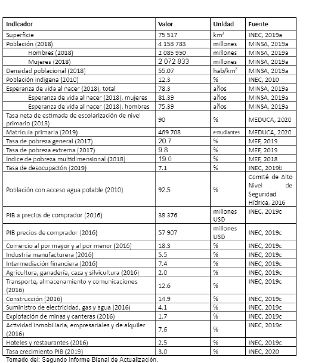
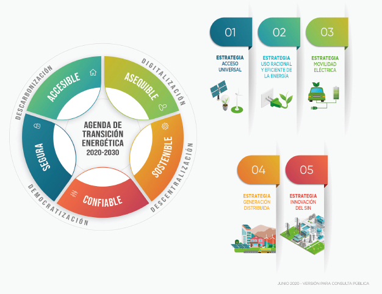
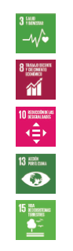
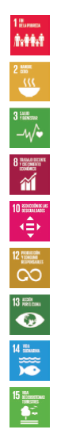
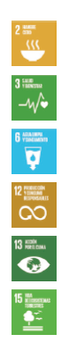
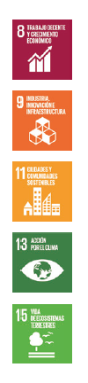

Las tablas de las páginas 114-120, 124-128 y 132-134 no están incluidas en este archivo HTML sobre Climate Watch; consulte el documento original sobre el NDC registro de ndc
Primera actualización.
Diciembre 2020
La nación panameña tiene una vocación de servicio y conectividad que ha marcado la historia del país desde sus inicios. Con una posición geográfica estratégica, un patrimonio natural exuberante y resultados de crecimiento económico robustos, el país cuenta con los elementos necesarios para garantizar una vida digna a sus habitantes, pero ello no será posible si el reto del cambio climático no es asumido con la más alta prioridad y perspectiva de Estado como una condición clave del entorno que pone en riesgo el patrimonio natural y material que nos sostiene.
En cumplimiento de los compromisos adquiridos ante la Convención Marco de Naciones Unidas sobre el Cambio Climático (CMNUCC), la República de Panamá presenta en Diciembre de 2020, la actualización de la Primera Contribución Determinada A Nivel Nacional (CDN1) presentada en 2016. La presente actualización representa la evolución de una perspectiva de acción climática desde la gestión ambiental, hacia una gestión orientada a la descarbonización de la economía y al aumento de la resiliencia climática a nivel nacional, local y sectorial. Este cambio de paradigma es la meta con la cual estamos comprometidos.
La aspiración transformacional de la economía es la principal característica del proceso de actualización de los compromisos climáticos que hemos emprendido como país, y que lejos de representar un punto de llegada, es un hito más en el camino hacia el desarrollo sostenible, bajo en emisiones, resiliente e inclusivo. De allí el lema “Panamá Transfórmate” como un llamado a la acción climática conjunta y estratégica.
La CDN1 Actualizada acomete la acción climática desde un enfoque integrado, que busca superar la dicotomía adaptación-mitigación, proponiendo compromisos que integran ambas dimensiones. La CDN1 Actualizada incluye la elaboración y puesta en marcha de instrumentos climáticos de planificación y gestión que marcan la ruta hacia la resiliencia, abarcando diez sectores y áreas estratégicas de la economía panameña, marcando un tránsito de los instrumentos de política nacional existentes, a la implantación y uso de instrumentos operacionales climáticos a nivel sectorial y transversal, abarcando toda la economía.
En este sentido, junto al compromiso de reducción de emisiones en el sector de energía, enmarcado en el contexto de la Agenda de Transición Energética, Panamá presenta por primera vez compromisos que incluyen la elaboración y puesta en marcha de instrumentos climáticos de planificación y gestión que marcan la ruta hacia la adaptación y la resiliencia, a través de la elaboración e implementación de seis planes sectoriales y cuatro guías sectoriales de cambio climático.
Con la puesta en ejecución de estos instrumentos sectoriales buscamos que, en el mediano plazo, todo programa, proyecto o emprendimiento, público o privado, integre el clima como variable intrínseca desde las fases más tempranas de su idea, diseño y planificación. Para esto, se incorpora al Ministerio de Economía y Finanzas (MEF)como un agente de cambio clave en la acción climática, junto a los Ministerios e instituciones rectoras que han asumido compromisos sectoriales.
La convergencia de los Objetivos de Desarrollo Sostenible (ODS), el Acuerdo de París, nuevo marco global de biodiversidad y la recuperación frente la crisis por COVID 19, ofrece la oportunidad para que, colocando la sostenibilidad y la acción climática al centro de la gestión económica y social, superemos las barreras de la pobreza y la desigualdad, que, junto con la amenaza climática, constituyen desafíos impostergables del gobierno y la sociedad panameña en su conjunto.
Con los compromisos que presenta Panamá en la CDN1 Actualizada, atendemos el llamado del Acuerdo de París, de aumentar el nivel de ambición. Para cumplir con este desafío se requiere avanzar en formas innovadoras de colaboración regional y global que nos permitan acelerar la respuesta climática, maximizando el acceso y eficiencia del financiamiento climático público, y creando condiciones para movilizar la inversión climática privada a gran escala.
Milciades Concepción, Ministro de Ambiente
La República de Panamá es un país diverso y multicultural, distinguido por una dinámica de crecimiento económico sustentado en una oferta sofisticada de servicios logísticos y financieros. El país se mantiene firme en la decisión estratégica de compromiso con los Objetivos de Desarrollo Sostenible (ODS) y la Convención Marco de Naciones Unidas sobre el cambio climático (CMNUCC). La vulnerabilidad del país ante los efectos del cambio climático, tanto a nivel de sus estructuras físicas, como de la plataforma de servicios ecosistémicos y antropogénicos que sustenta la economía nacional, exige un aumento en el nivel de ambición climática para garantizar la sostenibilidad y competitividad del país en el largo plazo, en un escenario de desarrollo que para ser sostenible tiene que ser resiliente al clima.
En seguimiento a los compromisos adquiridos por el país en el marco del Acuerdo de Paris (AP), la actualización de la primera Contribución Determinada a Nivel Nacional de Panamá (CDN1) es innovadora, justa y ambiciosa, toda vez que se fundamenta en un enfoque integrado, en el cual las acciones para la adaptación y mitigación se complementan para la construcción de resiliencia y avanzar hacia la neutralidad en carbono del país al 2050, generando beneficios triples. Esto es, que producen resultados múltiples y tangibles en los ámbitos del desarrollo económico, el bienestar social y la sostenibilidad ambiental, la igualdad de género y empoderamiento de las mujeres, jóvenes y grupos vulnerables, al minimizar el daño causado por los impactos del cambio climático y al mismo tiempo maximizar las oportunidades que ofrece el financiamiento climático.
A la vez, representa una oportunidad para reflejar una mayor ambición climática y resolver los problemas multidimensionales ligados con la falta de equidad, las desigualdades sociales existentes, las brechas de género e intergeneracionales y la pobreza que siguen afectando al país y limitan la sostenibilidad del desarrollo. Desde esta visión, en Panamá el desarrollo y la reducción de la pobreza y la desigualdad son elementos centrales de la adaptación y la mitigación climática, así como el además del compromiso de garantizar los derechos humAños e incorporar la igualdad de género como eje transversal para promover el desarrollo de políticas, estrategias y acciones climáticas sostenibles.
Un aspecto clave de la CDN1 Actualizada que presenta la República de Panamá en 2020 es la incorporación de un concepto más amplio de cambio climático y resiliencia en la planificación para el desarrollo del país, proponiendo un proceso transformacional de toda la dinámica económica, social y productiva panameña para avanzar en la circularidad, resiliencia y reducción progresiva de emisiones. Para ello se plantean acciones en diez sectores y/o áreas estratégicas para la acción climática integrada, con metas GEI y no GEI, las cuales se espera provean múltiples servicios ecosistémicos, así como mejoras significativas en materia de emisiones derivadas del transporte e implementación de estándares climáticos y de eficiencia. Para ello, se coloca la acción climática al más alto nivel de la planificación integrando de manera directa al Ministerio de Economía y Finanzas (MEF), otras instituciones públicas, gobiernos locales, sector privado y sociedad civil en el logro de objetivos de climáticos.
Cabe señalar que, los compromisos sectoriales planteados han sido fruto de un amplio proceso de participación, diálogo y consenso, en el cual el aumento de la ambición climática ha tomado en cuenta las prioridades políticas y sectoriales, capacidades, barreras y brechas existentes, así como a todos los sectores: sector público incluyendo entidades del gobierno central y gobiernos locales, sector privado, a los jóvenes, academia, sociedad civil y organismos no gubernamentales, a fin de plantear compromisos acordes a las circunstancias nacionales y que evidencien el compromiso climático de Panamá y su gente.
En atención a lo anterior, los veintinueve (29) compromisos presentados en la CDN1 Actualizada, se estructuran en torno a diez sectores y áreas estratégicas:
Incluyendo dos compromisos de fortalecimiento de capacidades para la transparencia climática sobre la determinación de las pérdidas y daños, y el monitoreo y evaluación de datos climáticos que fortalezcan la toma de decisiones para la acción climática.
Lo mismo que otros países de la región de América Latina y el Caribe (ALyC), Panamá tiene una posición asimétrica en relación con el cambio climático, al ser un país altamente vulnerable a sus efectos debido principalmente a su geografía, a la vez que ha tenido una contribución menor en el problema, con un aporte a las emisiones globales de GEI por el orden del 0.036%.
En seguimiento al principio de responsabilidades compartidas, pero diferenciadas y cumpliendo con lo establecido en el artículo 4.4 del Acuerdo de París, el país presenta un compromiso GEI para contribuir a la mitigación del cambio climático global, mediante el avance hacia una meta absoluta de reducción de emisiones para el conjunto de la economía, priorizando los sectores Energía y UTCUTS (Bosques) que son los de mayor incidencia en las tendencias de las emisiones nacionales. Con el compromiso de cuantías asociadas a los GEI, se reducirán las emisiones totales del sector Energía con respecto al escenario tendencial (BAU, por sus siglas en inglés) en un total estimado de 60 millones de toneladas de CO2 equivalente acumuladas entre 2022- 2050 y hasta 10 millones de toneladas de CO2 equivalente acumuladas entre 2022-2030.
Esta contribución global a la mitigación se complementa con una priorización de los sectores y áreas estratégicas de la economía más vulnerables a los efectos del cambio climático y que a la vez representan una oportunidad para la diversificación económica y para el inicio del proceso nacional de planificación para la adaptación en cada uno de ellos. Estos compromisos integrados adaptación-mitigación constituyen una mejora significativa en comparación a la CDN1 presentada en 2016 y contribuyen directamente al objetivo del artículo 2 de la CMNUCC.
Como parte de esta visión, Panamá reconoce que al adoptar medidas para hacer frente al cambio climático, se deberá respetar, promover y tomar en consideración sus respectivas obligaciones con respecto a los derechos humAños , el derecho a la salud, los derechos de los pueblos indígenas, las comunidades locales, los migrantes, los niños, las personas con discapacidad y las personas en situaciones de vulnerabilidad y el derecho al desarrollo, así como la igualdad de género, el empoderamiento de la mujer y la equidad intergeneracional. Para lograr este objetivo, Panamá se compromete a incorporar el enfoque de género y derechos humAños en los programas y proyectos de mitigación y adaptación con el fin de promover una sociedad con bajas emisiones en carbono donde se visibilizasen los esfuerzos de hombres y mujeres en la gestión climática, se reduzcan las desigualdades existentes y se promuevan oportunidades de empoderamiento efectivo para las mujeres.
La actualización de la CDN1 se realizó en el contexto mundial, regional y nacional signado por la agenda de recuperación ante la crisis del COVID 19 y las pérdidas y daños de la temporada de huracanes 2020. Para enfrentar la situación post 2020, se elaboró un Plan para la Recuperación Económica 2020 con acciones para el inmediato, corto y mediano plazo, con una serie de políticas de atenuación de los efectos económicos que buscan apoyar a segmentos de la población vulnerables. Además, Panamá se integró a la “Plataforma para el Rediseño 2020” para diseñar e implementar medidas de recuperación de la pandemia del coronavirus, abordando al mismo tiempo las medidas relativas al cambio climático y avanzando en tres transiciones principales: hacia una sociedad descarbonizada, hacia una economía circular y hacia una sociedad descentralizada.
En síntesis, la CDN1 Actualizada de Panamá se construye a partir de tres aspiraciones claves:
Para avanzar en el cumplimiento de los compromisos presentados, se aplicará una gestión adaptativa a la luz de las circunstancias y necesidades nacionales, respondiendo a las cuestiones de género, participación y transparencia, tomando en consideración a los grupos, comunidades y ecosistemas vulnerables, según lo estipulado en el Acuerdo de Paris. Igualmente se atenderán los requerimientos del Acuerdo de Paris en relación a las orientaciones sobre información necesaria para claridad, transparencia y comprensión (ICTC) relacionadas con la CDN respectiva de cada Parte y las orientaciones para las comunicaciones de adaptación (Decisiones 4/CMA.1 y 9/CMA.1 respectivamente), con miras a participar en el proceso Balance Mundial a partir de 2023, y mejorar el acceso a fuentes de financiamiento climático internacional.
El cambio climático es el desafío global de nuestra generación, y enfrentarlo requiere el compromiso de todos los países y personas, sin distingos ni exclusiones de ninguna índole. La República de Panamá, en cumplimiento de los compromisos adquiridos ante la Convención Marco de las Naciones Unidas sobre el Cambio Climático (CMNUCC) y el Acuerdo de París (AP), presenta la actualización de la Primera Contribución Determinada a nivel Nacional (CDN1).
Con la presentación de la CDN1 Actualizada en 2020, Panamá se apresta a seguir los lineamientos establecidos en el artículo 4 del Acuerdo de París y el marco Reforzado de Transparencia (MRT) que incluye la presentación de Informes de Inventarios Nacionales (IIN), Informes Bienales de Transparencia (IBT) y reporte del progreso de las Contribuciones Determinadas a Nivel Nacional (CDN).
Para el proceso de actualización se han tomado en cuenta los lineamientos establecidos en las orientaciones para los fines de claridad, transparencia, comprensión y para las comunicaciones de adaptación (Decisiones 4/CMA.1, 1/CP.21 y 9/CMA.1). Igualmente se han incorporado las recomendaciones de las instancias y organismos de apoyo en cuanto a elementos considerados como esenciales para aumentar el nivel de ambición y la robustez de la información.
En las primeras secciones se presenta información del contexto nacional, una descripción del proceso de actualización de la CDN1, los principios que la han orientado y cómo se refleja el nivel de ambición aumentado. A partir de la sección 4, se describen detalladamente los compromisos específicos a futuro para toda la economía, expresados a nivel sectorial y en áreas estratégicas, bajo un enfoque integrado adaptación-mitigación, incluyendo un compromiso GEI. Para efectos de claridad, los compromisos se presentan separados en compromisos sectoriales y compromisos de fortalecimiento de capacidades para la acción y la transparencia climática.
Para cada compromiso se incluye una breve descripción del contexto con referencia a las circunstancias del sector o área estratégica correspondiente, seguida de una tabla resumen que incluye el compromiso con su meta, la entidad regente, el tipo de compromiso, indicadores preliminares y los ODS a los que contribuye. La descripción de cada compromiso se complementa con una breve referencia indicativa a aspectos operativos relacionados con los medios de implementación, su potencial de integración adaptación-mitigación y termina con una declaración de la ambición en el largo plazo.
En el Anexo A se incluye información para facilitar la claridad, transparencia y comprensión de la CDN1 de Panamá Actualizada, se incluye un resumen tabular de todos los compromisos indicando para cada uno: datos de cobertura (descripción y objetivos, los sectores cubiertos, marco geográfico, horizonte temporal); circunstancias nacionales (marco político habilitante y entidades implementadoras); estatus del compromiso (estado, pasos previstos e indicadores de implementación); efectos (beneficios en adaptación y beneficios en mitigación).
En atención al proceso permanente de aprendizaje, implementación, evaluación y ajuste con que Panamá adelanta la acción climática, la CDN1 Actualizada incorpora elementos relativos al género y la equidad, que nos permiten avanzar en los objetivos nacionales de lucha contra la pobreza y la desigualdad, en el marco de planificación nacional para el logro de los Objetivos de Desarrollo Sostenible (ODS) y la Agenda 2030. Igualmente, se incorpora en los elementos del contexto la situación especialísima de la pandemia del COVID 19 que ha exigido un replanteamiento y reacomodo de la planificación y de la administración del Estado para hacer frente a la situación crítica y al escenario de recuperación post 2020.
En esta sección se presenta un breve resumen del contexto general del país al momento de la actualización de la CDN1. Información detallada y ampliada está disponible en el Segundo Informe Bienal de Actualización (2IBA) de Panamá, en la Tercera Comunicación Nacional (MiAMBIENTE, 2018) e informes nacionales conexos presentados a la CMNUCC.
El territorio de la República de Panamá comprende la superficie terrestre, el mar territorial, la plataforma continental submarina y el espacio aéreo entre Colombia y Costa Rica de acuerdo con los tratados de límites celebrados entre Panamá y estos dos Estados. Panamá se encuentra localizado en el hemisferio norte, en la zona intertropical cercana al Ecuador. La República de Panamá se localiza geográficamente en las latitudes septentrionales bajas es decir entre los 7°12´07´´ y los 9°38´46´´ latitud Norte y los 77°09´24´´ y 83°03´07´´ de longitud occidental.
Panamá posee un territorio continental e insular de 75,517 km2, su forma es similar a una «S» mayúscula acostada y presenta una dirección de este a oeste, contraria a la dirección del resto de los países centroamericAños los cuales se presentan de norte a sur. Está dispuesto en sentido Oeste-Este, limita al Norte con el Mar Caribe, al sur con el Océano Pacífico, al Este con Colombia y al Oeste con Costa Rica. El 70 % del territorio nacional está ocupado por las tierras bajas y colinas de menos de 700 msnm y está conformado por las extensas llanuras de Chiriquí, Veraguas, la península de Azuero, Coclé y las llanuras costeras del Caribe. El restante 30 % corresponde a las tierras por encima de los 700 msnm, que incluyen la cordillera central con elevaciones entre las que se destacan el volcán Barú que posee la cota más elevada del país (3, 475 msnm), cerro Fábrega (3,375 msnm) y cerro Echandi (3,163 msnm), hacia el Oeste; hacia el Este, el arco oriental del Norte que incluye la sierra Llorona de Portobelo, la cordillera de San Blas y la cordillera de Tacarcuna y el arco oriental del Sur que comprende la serranía del Sapo, la serranía de Majé y la serranía de Pirre (MiAMBIENTE, 2018).
El territorio se divide en diez provincias (Bocas del Toro, Coclé, Colón, Chiriquí, Darién, Herrera, Los Santos, Panamá, Panamá Oeste y Veraguas), 81 distritos o municipios, 679 corregimientos (dos comarcas con nivel de corregimiento: Kuna de Madugandi y Kuna de Wargandi y tres comarcas indígenas con categoría de provincia: Guna Yala, Emberá-Wounaan y Ngäbe-Buglé) (INEC,2019).
El territorio panameño presenta un clima tropical uniforme durante todo el año con una estacionalidad determinada por los patrones de precipitación marcando el clima panameño entre temporada seca y lluviosa. Los valores de temperatura promedio anual oscilan entre los 23 y 27° C, con máximas de hasta 33°C para las áreas costeras, y a mayor elevación los valores pueden descender hasta los 16° C. La temperatura en Panamá se define principalmente por la topografía del territorio donde esta aumenta alrededor de 0.56°C por cada 100 m de altitud. (TCNCC, 2018). Por otro lado, las precipitaciones varían entre los 1,500 y 3000 mm al año, con variaciones de acuerdo a la topografía e influencia oceánica; para el lado Caribe las precipitaciones son mayores que en la vertiente del Pacífico. En Panamá el régimen pluviométrico influye mucho en las actividades productivas, la ubicación de los bosques, biodiversidad, entre otros. Se identifican tres regiones pluviométricas (Pacífica, Central y Atlántica), cada una con características propias.
Las grandes masas oceánicas del Atlántico y del Pacífico son las responsables del alto contenido de humedad del ambiente, y debido a lo angosto de la franja que separa ambos océAños , el clima panameño tiene una gran influencia marítima. Respecto a la meteorología, el anticiclón semipermanente del Atlántico Norte afecta sensiblemente las condiciones climáticas de nuestro país, ya que desde este sistema se generan los vientos alisios del nordeste que en las capas bajas de la atmósfera llegan a nuestro país, determinando sensiblemente el clima del país (ETESA, 2009).
Según la Estrategia Nacional de Cambio Climático 2050, las principales afectaciones asociadas al cambio climático incluyen los riesgos por aumento del nivel del mar y eventos hidro-meteorológicos. En cuanto al aumento del nivel del mar se enfrentan ya situaciones críticas actuales en poblaciones indígenas vulnerables. Un caso crítico es la situación de la Comarca Guna Yala, archipiélago ubicado en la costa caribe del país, para la cual desde 2014 se documenta la necesidad de planificar procesos de desplazamiento del archipiélago hacia a la zona continental (Displacement, 2014). Herramientas de modelación de riesgo costero sugieren escenarios de inundación a 2050 que comprometen áreas críticas de la operación canalera en la ciudad de Panamá. La recurrencia de periodos de sequía en los últimos años y las importantes pérdidas que han generado en el sector agropecuario (US$ 100 millones de pérdidas en el sector solo en el año 2013) han hecho que el cambio climático se convierta en una de las principales preocupaciones del rubro agropecuario panameño (PNCCSA).
Según datos del Plan Estratégico de Gobierno (PEG) 2019-2024, la economía panameña se ha desarrollado como una economía de servicios, y es allí donde se encuentra su ventaja comparativa. El centro de tránsito constituye el 83% del PIB, 90% de las exportaciones de servicios y 65% de la población. La actividad logística está constituida por el trasbordo, almacenaje, consolidación, reempaque, ensamblaje y redistribución en puertos, Zona Libre de Colón, Panamá Pacífico, Ciudad del Saber y zonas procesadoras de exportación (PEG 2019). Esta vocación de tránsito y conectividad, posiciona al país como una plataforma de acceso a la región de América Latina y el Caribe (ALyC).
Desde 1990, Panamá ha tenido un desempeño económico excepcional. Constantemente ha liderado la región en tasa de crecimiento económico, con un 5.9% en promedio por año. En el mismo tiempo, Panamá ha tenido una transformación estructural de su economía, en la que los sectores de la construcción, los servicios financieros y logísticos, así como el comercio al por menor y al por mayor han realizado la mayor contribución al crecimiento. El sector agropecuario, uno de los sectores con mayor porcentaje de ocupación, con el 14.4% de todos los empleos, ha caído constantemente en su aportación al PIB, pasando de 6.2% en 2005 a 3.1% en 2015 y entre 2016 y 2019 se ha mantenido en 2%. Al mismo tiempo, entre 2015 y 2019 los sectores transporte, construcción y comercio al por menor y al por mayor, que en 2019 registraron el 35% del empleo, han aumentado su participación en el PIB, o se ha mantenido relativamente constante. Transporte de 13% a 14%, construcción 14% y comercio al por menor y al por mayor 18% (INDH, 2019).
Según datos del Informe mundial sobre Desarrollo Humano 2019, del Programa de las Naciones Unidas para el Desarrollo (PNUD), Panamá se encuentra en el puesto 67 en el Índice de Desarrollo Humano (IDH) de 189 países y territorios, lo que lo sitúa en el grupo de países con IDH alto.
Panamá ha tenido progresos significativos en cuanto a reducción de la pobreza. La tasa de pobreza general en 2017 se situó en 20.7%, y para el caso de la pobreza extrema del año 2017 se presentó una tasa de 9.8% (MEF,2019), debido en parte al crecimiento económico y a las transferencias públicas. Utilizando la línea de pobreza de US$5,5 al día, entre los años 2015-2018, hubo una disminución de pobreza del 15,4% a un 12,6%, mientras que la pobreza extrema, fijada en US$3,2 diarios, declinó de 6,7% a 5,2%. Si bien las brechas urbano - rurales han disminuido, las mismas siguen siendo amplias: la tasa de pobreza es casi el doble en la población rural (40.8%) que en el conjunto del país (20.7%) y en la población indígena es cuatro veces superior (82%). (BID, 2019)
A pesar de los avances en la lucha contra la pobreza, Panamá se mantiene como uno de los países más desiguales del mundo. La elevada desigualdad que existe en Panamá y su persistencia están estrechamente relacionadas con los fuertes desequilibrios territoriales que existen en el país, siendo uno de los países con mayores diferencias territoriales de América Latina. (BID 2019). Esta desigualdad se traduce en vulnerabilidad, siendo las mujeres, las personas con discapacidad y los indígenas las poblaciones en condiciones más vulnerables.
La población en Panamá al 1 de julio de 2018 se estimó en 4 158 783, el total de hombres es de 2, 085,950 representando un 50.2% y el de mujeres es de 2 072 833 representando un 49.8% (MINSA, 2019a). Para el año 2018, la población indígena representó el 12,3% del total y la afro descendiente el 9,2%. Del total de la población, las mujeres y niñas representan el 49,77% según el censo de 2010. Según datos de ONU Mujeres, el índice de desigualdad de género del país es de 0.58 y de 0.87 en las zonas indígenas, lo que da un promedio de 0.73 y califica a Panamá como un país de alta desigualdad de género. Antes de la pandemia del COVID-19 aproximadamente una de cada cinco personas en Panamá estaba en situación de pobreza multidimensional7. Pero para la población indígena la incidencia de la pobreza multidimensional es extremadanamente alta: el 93.7% de las mujeres Gunas, el 89.8% de las mujeres Ngäbe Buglé y el 70.9% de las mujeres Emberá estaban en condiciones de pobreza multidimensional. (ONU Mujeres, s.f.)
En cuanto al perfil de salud de su población, Panamá se encuentra en plena transición demográfica con polarización epidemiológica, es decir, con doble carga de enfermedad, por un lado, las transmisibles son prevalentes en la población rural y pobre y las enfermedades de tipo crónico-degenerativo van en ascenso, como es de esperar en poblaciones en envejecimiento. La esperanza de vida al nacer es de 77,7 años con diferencias importantes según el sexo. Para los hombres es de 74,8 años y 80,9 para las mujeres. En materia de cobertura universal de salud, las estimaciones de cobertura asignan el 60% de la población a la Caja del Seguro Social y el 40% al Ministerio de Salud que además de ser un prestador de servicios es también el ente Rector del Sistema Nacional de Salud. (MINSA, 2018).
El sector agropecuario panameño es diverso, sin embargo, la producción se concentra en algunos rubros específicos. En términos de volumen, destacan la caña de azúcar, banano, arroz, plátAños y maíz; sin embargo, los productos que más valor agregan son la carne de vacuno y cerdo, el banano, el arroz y la caña de azúcar. Según datos del Banco Mundial, entre 2010 y 2015 la participación de la agricultura en el PIB de Panamá fue, en promedio, de 3.3%, por debajo del promedio de 5.2% de América Latina y el Caribe. A pesar del aporte modesto del sector agropecuario en la economía panameña, más del 33.3% del total de la población total de Panamá (alrededor de 1.3 millones de personas) vive en zonas rurales, de acuerdo con información del Banco Mundial. Según el Ministerio de Economía y Finanzas (MEF), el 39.8% de la población rural vive en condiciones de pobreza; lo que contrasta con las áreas urbanas donde el 9.3% de la población urbana se encuentra en tales condiciones. Por lo tanto, gran parte de la pobreza del país se concentra en áreas rurales. Asimismo, el 9% de las mujeres trabajadoras, y el 20% de los trabajadores varones se dedican a actividades agropecuarias (Banco Mundial, 2018), lo que resulta en que el 15.7% de la población trabaje en este sector. (BID, 2019)
Adicionalmente, las condiciones de desigualdad de oportunidades para hacerle frente a las amenazas naturales, la distribución de la pobreza, la necesidad de un mayor seguimiento a obras o acciones para contrarrestar los efectos climáticos, así como el reto de una mayor coordinación entre todos los interesados, hacen que las condiciones de vulnerabilidad se incrementen y se expresen de manera más significativa mayor en la población con escasos recursos, mayormente adulta, particularmente mujeres o niños y niñas en estado de pobreza, así como la necesidad de mayores servicios básicos y programas de fortalecimiento de capacidades locales.
La cuenca de Canal de Panamá, clave para la economía del país, ha registrado un aumento de la temperatura de 0.5%, con una reducción de hasta 20% de los caudales del río Chagres que provee el agua para las esclusas de la vía acuática y para el consumo de casi dos millones de personas en Panamá, Colón y Panamá Oeste. Estas amenazas se traducen en situaciones concretas de disponibilidad de agua en verano, una mayor demanda de energía ante altas temperaturas, potencial pérdida de cultivos y de suelos y consecuente aumento de frontera agrícola; adicionalmente, la mayor probabilidad de eventos extremos que pueden afectar las poblaciones de la cuenca y estructuras para la operación del Canal.
A continuación, se presenta un resumen de los principales indicadores nacionales.
En cuanto a datos desagregados por sexo e indicadores que caracterizan la situación económica y social de las mujeres en Panamá, en condiciones sociales regulares, diversos estudios evidencian la brecha de género existente entre hombres y mujeres en el país (ONU Mujeres, 2020). En 2018, un 18.6% de las mujeres se encontraba en situación de pobreza multidimensional, siendo las Comarcas Indígenas y las provincias de Bocas del Toro y Darién donde mayor impacto tiene las condiciones de pobreza, mientras que en las provincias de Los Santos y Herrera las mujeres están en situaciones de menor empobrecimiento (INEC, Encuesta de hogares 2018).
Las desigualdades entre hombres y mujeres sugieren una situación de feminización de la pobreza, en donde las diferencias en cuanto a ingresos propios, desempleo, subempleo y tenencia de la tierra son solo algunos ámbitos que evidencian la inequidad de género. Según información proporcionada por el Programa de Naciones Unidas para el Desarrollo (PNUD), el valor del IDH de las mujeres correspondiente a Panamá en 2018 es de 0.794, mientras que para los hombres es de 0.790, y, en consecuencia, el valor del Índice de Desarrollo de Género es 1.005. Por otro lado, el IDH 2010 introdujo el Índice de Desigualdad de Género, que refleja las desigualdades basadas en el género en tres dimensiones: salud reproductiva, empoderamiento y actividad económica. Panamá obtuvo un valor de 0.460 en el Índice de Desigualdad de Género, por lo que en 2018 ocupa el lugar 108 de un total de 162 países.
Otros datos desagregados por género para Panamá indican que el 18.3% de los escaños parlamentarios están ocupados por mujeres, y el 74.8% de las mujeres adultas ha alcanzado, al menos, la educación secundaria, frente al 68.4% de sus homólogos masculinos. Por cada 100,000 nacidos vivos mueren 94 mujeres por causas relacionadas con el embarazo, y la tasa de fecundidad entre las adolescentes es de 81.8 nacimientos por cada 1,000 mujeres de 15 a 19 años. La participación de las mujeres en el mercado de trabajo es del 52.5%, en comparación con el 80.5% de los hombres.
El Plan Nacional de Gestión de Riesgo de Desastres incluye entre sus principios estratégicos la Equidad de Género y Pluriculturalidad, por lo que Es necesario avanzar analizando la vulnerabilidad diferenciada de los mujeres y hombres, en su diversidad, antes los impactos climáticos; sus roles y contribuciones diferenciadas a la gestión del riesgo de desastres y sus contribuciones a los procesos de desarrollo y resiliencia climática. La incorporación explícita de consideraciones de género en las acciones climáticas que se deriven de los compromisos establecidos en la CDN1 Actualizada es una forma concreta de avanzar en la equidad de género desde la acción climática.
Tabla 1. Principales indicadores de Panamá

La CDN1 de Panamá Actualizada se beneficia de un marco habilitante de política pública, normativo y de planificación general y sectorial para la acción climática y el desarrollo sostenible. Previo a la presentación de la CDN1 en 2016, el compromiso del país con la Agenda 2030 y los ODS se formalizó a través del Decreto Ejecutivo 393 de 2015 que adopta los Objetivos de Desarrollo Sostenible (ODS) y dicta otras disposiciones. En alineación con esta agenda de desarrollo sostenible se elaboró un Plan Estratégico Nacional con Visión de Estado “Panamá 2030” (PEN 2030) en el seno del Consejo de la Concertación Nacional para el Desarrollo y el Plan Estratégico de Gobierno 2019-2024. Este último reconoce la necesidad de enfrentar a los problemas que provienen del cambio climático y el peligro que éste constituye para el bienestar de todas las personas panameñas, especialmente por la desprotección e inadecuada aplicación de regulaciones ecológicas en la cuenca del Canal y la Región del Darién.
Al momento de la actualización de la CDN1, el país cuenta con una normativa ambiental enmarcada en el Texto Único de la Ley 41 General de Ambiente de 1998 (la Ley 8 de 2015) que crea el Ministerio de Ambiente. Mediante el Acuerdo de Paris ratificado por Ley 40 de 2016, la Estrategia Nacional de Cambio Climático 2050 y la Política Nacional de Cambio Climático en proceso de revisión, y Decreto Ejecutivo 100 de 20 de octubre de 2020, que reglamenta el capítulo sobre Mitigación del Cambio Climático Global de la Ley General de Ambiente y crea el Programa Nacional Reduce Tu Huella para la gestión y monitoreo del desarrollo económico y social bajo en carbono en la República de Panamá.
Este reglamento de Mitigación crea además la Plataforma Nacional de Transparencia Climática (PNTC), adscrita al Sistema Nacional de Información Ambiental (SINIA), establece los parámetros por los cuales se regirá la elaboración de los inventarios nacionales de emisiones de GEI por fuentes y absorciones por sumideros de carbono y plantea los arreglos institucionales para la actualización, presentación, implementación, seguimiento y reporte de las sucesivas CDN de Panamá.
Este marco general se complementa con un corpus extenso de instrumentos de política pública y normativa sectorial en implementación, que incluye documentos de políticas, planes, estrategias y marcos legales y reglamentarios para cada uno de los diez sectores y áreas estratégicas transversales priorizadas. El listado de instrumentos orientadores de política sectorial relevante incluye:
Para la actualización de la CDN1, incluyendo el diseño, establecimiento de los compromisos y su socialización, se realizó un proceso amplio, sistemático y multisectorial de consulta y validación, liderado por el MiAMBIENTE. Cada compromiso fue discutido y consensuado con la institución sectorial responsable de su implementación. Además de las sesiones de trabajo institucionales para diseño, definición y ajuste de los compromisos, se realizaron nueve talleres interactivos virtuales de escucha activa con el sector privado, sector público, gobiernos locales, organizaciones no gubernamentales, comunidad científica y jóvenes, en los que participaron más de trescientas personas, con evidencia de participación de al menos 53 % mujeres y 47% hombres. Previo a su formalización, el documento de la CDN1 Actualizada fue sometido a un proceso de revisión de pares y participación pública por medio de la web institucional del MiAMBIENTE.
El proceso de actualización de la CDN1 resultó en el establecimiento de veintinueve (29) compromisos estructurados en torno a diez (10) sectores y áreas estratégicas priorizadas así:
Incluyendo además dos (2) compromisos de fortalecimiento de capacidades para la transparencia climática, en materia de determinación de las pérdidas y daños, y el monitoreo y la evaluación de los riesgos climáticos y del desarrollo bajo en emisiones en Panamá.
Los principios y enfoques metodológicos que orientaron la actualización de la CDN1 son:
Enfoque integrado adaptación-mitigación: se refiere a la necesidad de demostrar cómo cada uno de los diez sectores y áreas estratégicas priorizados puede reducir emisiones, a la vez que promueve sinergias y beneficios potenciales en resiliencia de las poblaciones y mejoramiento de medios de vida, genera empleos verdes y gatilla mejora de resultados en salud, educación, y reducción de desigualdad.
Enfoque de planificación y toma de decisiones participativas y sensibles al género para el desarrollo resiliente e inclusivo: se refiere a la definición de las contribuciones y los mecanismos para su implementación son consensuados con los actores nacionales, sectoriales y locales, asegurando una amplia participación y distribuyendo las cargas y oportunidades, de la manera más equitativa y justa posible, a la vez que se reconoce el género como un tema esencial y se toman en cuenta las normas, los roles de género y las desigualdades como parte de sus objetivos.
Enfoque de soluciones basadas en naturaleza e infraestructura verde: se refiere a las soluciones basadas en la naturaleza (SbN) que incluye aquellas acciones que integran a los ecosistemas y los servicios que estos proveen, para responder a diversos desafíos de la sociedad como el cambio climático, la seguridad alimentaria o el riesgo de desastres. La “infraestructura verde” constituye una buena alternativa o complemento para los enfoques de ingeniería convencional, conocidos ingeniería “dura” o infraestructura “gris”.
La visión que orientó el proceso de actualización de la CDN1 es la resiliencia y reducción progresiva de emisiones de dióxido de carbono hacia la neutralidad en carbono del país al 2050.
En la Tercera Comunicación Nacional sobre Cambio Climático de Panamá, se indica que Panamá ocupa el puesto 14 entre los países con mayor exposición a amenazas naturales múltiples, con 15% de su área y 12.5% de su población total, expuesta a dos o más amenazas. En atención al principio de responsabilidades comunes, pero diferenciadas, aun cuando Panamá no tiene un aporte significativo a las emisiones globales de GEI, la CDN1 Actualizada es justa y ambiciosa toda vez que incluye un compromiso de reducción en el sector de energía que es el mayor emisor en el país y establece acciones para incrementar la transparencia aclarando las cifras de absorción. Igualmente, la CDN1 de Panamá Actualizada representa un aumento del nivel de ambición respecto a la CDN1 de 2016, al incorporar compromisos integrados de adaptación-mitigación para diez (10) sectores y áreas estratégicas de la economía nacional y hacer un llamado al desarrollo sostenible, comprometiendo acciones para todos los sectores en un contexto de rutas de descarbonización de la economía y recuperación económica ante la pandemia del COVID-19.
En paralelo a los compromisos específicos asumidos por el país, al 2025 estará en implementación un conjunto adicional de normativas, instrumentos y acciones relevantes a la acción climática que se encuentran actualmente en proceso de elaboración y formalización, que incluye:
Aspectos relativos al género
En atención a lo establecido en el Acuerdo de París (AP) en cuanto que las Partes deben promover la equidad de género e incluir medidas de adaptación en dicho sentido, la CDN1 Actualizada reconoce el rol transformacional que tienen las mujeres para la acción climática y con ello la importancia de avanzar en la inclusión de la equidad de género en la misma. Se hace constar que el país avanza un Plan Nacional de Acción de Género que facilitará abordar las acciones de mitigación y adaptación con un enfoque de derechos y equidad.
En Panamá, los sectores más importantes en términos de emisiones y absorciones de GEI (actuales o futuras), son el sector Energía (generación de electricidad y transporte terrestre) y el sector de las actividades vinculadas al Uso de la Tierra, Cambio del uso de la Tierra y Silvicultura (UTCUTS), donde la deforestación y degradación de los bosques, juega un papel importante. Por esta razón y en coherencia con la contribución presentada en 2016, la CDN1 Actualizada da continuidad a los esfuerzos en ambos sectores, con un nivel de ambición aumentado.
Desde la perspectiva de adaptación, el objetivo específico que se persigue con la actualización de la CDN1 de Panamá es promover la resiliencia al clima y reducir el riesgo ante los efectos del cambio climático. La CDN1 será progresiva y se implementará mediante un enfoque participativo y transparente, inclusivo y sensible al género, sobre la base de nuestras circunstancias nacionales y sectoriales.
A continuación, se detallan los compromisos por sector o área estratégica.
En Panamá, el sector Energía toma en cuenta las emisiones procedentes de la combustión estacionaria y fuentes móviles procedentes de la quema de diversos tipos de combustibles. Es el mayor emisor de GEI, de acuerdo a los datos de inventarios de gases de efecto invernadero (INGEI) de Panamá (MiAMBIENTE, 2020).
La República de Panamá es un país con una economía basada en el comercio y servicio. En 2019, el consumo energético nacional por sector estaba distribuido de la siguiente manera: 47.4% representaba al transporte, 19% al industrial, 17.1% al comercial y servicios públicos, 16% al residencial y 0.5% a otros (SNE, 2019). Para satisfacer esta demanda la oferta energética nacional provino, principalmente, de fuentes importadas en un 82.3% (derivados del petróleo, carbón y gas natural) y de recursos naturales en un 17.7% (hidro-energía, eólica, solar, biogás, bagazo y leña), según el balance energético de 2019. Es evidente que Panamá cuenta con una matriz energética diversificada, sin embargo, todavía depende considerablemente de la importación de combustibles fósiles y, por consiguiente, está sujeto a la volatilidad de los precios mundiales.
Del total de la oferta energética (38,918 Kbep), el 48.7% fue dirigido a la generación de electricidad. La capacidad instalada por tipo de fuente en 2019 fue de 43.9% (hidroeléctrica), 24.9% (derivados del petróleo), 10.3% (carbón), 9.3% (gas natural) y 11.6% (energías renovables no convencionales, distribuidos en 6.6% eólico, 4.8% solar, 0.2% biogás). Es importante resaltar que estos números están cercAños (77% de la meta al 2030) al compromiso presentado en 2016 en la CDN1 de Panamá sobre 15% de Energías Renovables No Convencionales (ERNC) al 2030.
Tomando como año base 2014 donde la participación de ERNC era 2.1%, en el 2019 se refleja un aumento en cuanto a participación de ERNC de 9.5%. Es importante resaltar que múltiples medidas de impacto directo se han llevado a cabo para alcanzar dicho aumento en las ERNC, entre ellos una serie de incentivos fiscales para el fomento de la generación hidroeléctrica que abarcan mini-centrales, centrales eólicas, solares y de gas natural, así como la modificación a las reglas de compras de energía y potencia. Adicionalmente, se cuenta con medidas de eficiencia energética tales como, la definición de catorce (14) índices de eficiencia energética, normas y reglamentos técnicos vigentes para aire acondicionado y refrigeración, con su respectivo etiquetado energético, reglamento técnico vigente para la edificación sostenible, una estrategia nacional en movilidad eléctrica, y una modificación en la ley de las contrataciones públicas para la promoción de compras socialmente responsables, sostenibles y sustentables.
Sin embargo, todavía el sector Energía cuenta con una serie de retos que debe sobrepasar, entre ellos: 1) cerrar la brecha de acceso energético en el país, 2) disminuir el consumo de combustibles fósiles y hacer un mayor uso del potencial de energías renovables con los que cuenta el país, 3) atender la calidad del servicio eléctrico, la cual se ha visto afectada por el crecimiento de la población y su concentración en la ciudad de Panamá, San Miguelito, Arraiján, David y Colón, 4) disminuir los subsidios eléctricos y de hidrocarburos, manteniendo unos precios de electricidad y combustibles aceptables al usuario final, 5) mitigar las emisiones de gases de efecto de invernadero del sector transporte, las cuales en el 2017 correspondían a aproximadamente un 57% de las emisiones del sector, 6) adaptar el sector energético ante los efectos adversos del cambio climático como lo son los incrementos de temperatura y cambios en los patrones de precipitación, que tienen el potencial de impactar la demanda, distribución, transmisión y generación de energía.
Proceso de planificación nacional para la preparación del compromiso
Para la preparación de la contribución del sector Energía, se tomó como referencia el Plan Energético Nacional 2015-2050 y los Lineamientos Estratégicos de la Agenda de Transición Energética (ATE) 2020-2030 que, a la fecha, son los instrumentos de planificación a mediano y largo plazo de este sector.

Los Lineamientos Estratégicos de la ATE 2020-2030, plantean las ocho (8) Estrategias Nacionales que servirán como hojas de rutas para llevar el sector energético hacia una transición en el que llegue a ser asequible, accesible, confiable, segura y sostenible para el panameño. Estas son: 1) Acceso Universal, 2) Uso Racional y Eficiente de la Energía, 3) Movilidad Eléctrica, 4) Generación Distribuida, 5) Innovación del Sistema Interconectado Nacional (SIN), 6) Panamá como Hub Energético (hub de gas natural y hub de energías verdes), 7) Modernización de marco regulatorio del sector hidrocarburos y 8) Fortalecimiento institucional. La ATE fue oficializada a través de la Resolución de Gabinete 93 de 2020.
Para la construcción de un nuevo compromiso fue necesario evaluar dos escenarios1:
Escenario tendencial (BAU, por sus siglas en inglés): escenario basado en los paquetes de reactivación económica Post COVID19 con inversiones en infraestructura convencional. Supone a Panamá como un Hub de distribución de Gas Natural Licuado (GNL); y no considera inversiones específicas en renovables y eficiencia energética, más de los instrumentos de políticas ya previstos y se considera el avance de la Movilidad Eléctrica sin estímulos adicionales a los pilotos ya previstos. El consumo energético y PBI siguen tendencias históricas.
Escenario de la Agenda de Transición Energética (ATE): escenario basado en objetivos de ATE (Agenda de Transición Energética)2 y sus mesas consultivas; Paquete de reactivación económica Post COVID-19 con inversiones en infraestructura convencional e inversiones climáticas de ERNC, eficiencia energética y movilidad eléctrica, la evolución del sistema de transporte público se establece de acuerdo al Plan Integrado de Movilidad Urbana Sostenible (PIMUS).
Cabe resaltar que debido a la crisis sanitaria que vive el mundo, se parte del supuesto que estos escenarios ponen en marcha los paquetes de reactivación económica a partir de 2022 y que la demanda de energía comienza a desacoplarse del crecimiento económico en el escenario ATE producto de las políticas planteadas para el sector. La ATE 2020-2030 busca ser la nueva ruta de descarbonización y resiliencia climática del sector energía en la República de Panamá y se centrará en lineamientos estratégicos priorizados por el Gobierno de Panamá tanto para la acción climática y la política nacional energética como para la reactivación económica Post-COVID-19.
En este sentido, según los análisis para la ATE 2020- 2030, las inversiones climáticas necesarias para lograr los objetivos planteados en este escenario, en promedio, son del 1.5% del PIB al 2050 y permitirán ahorros acumulados en subsidios de alrededor de B/.2MM para el 2030 y B/.10.5MM para el 2050, con un potencial de creación de nuevos empleos directos e indirectos al sector energético de aproximadamente 35 mil empleos para los 2030 y 100 mil empleos para el 2050. La implementación de la ATE 2020-2030 generará una disminución de la contaminación del aire, conllevando a que menos panameños padezcan enfermedades respiratorias, más calidad de vida especialmente en época post COVID19 y menos costos para el sistema de salud cuantificados en un ahorro acumulado de B/.43 millones al 2030 y B/.195 millones al 2050. Con estas cifras salta a relucir las ventajas económicas que traería el realizar inversiones climáticas de esta índole, sin embargo, son metas ambiciosas que requieren de un compromiso país.
Desde el punto de vista ambiental, Panamá logrará una reducción de las emisiones totales del sector energía del país en al menos el 24% al 2050 y en al menos 11.5% al 2030, con respecto al escenario BAU, que representan un estimado de 60 millones de toneladas de CO2 equivalentes acumuladas entre 2022-2050 y hasta 10 millones de toneladas de CO2 equivalentes acumuladas entre 2022- 2030. Es importante, resaltar que la ATE 2020-2030 supone un instrumento que requerirá de apoyo internacional para romper barreras financieras, de transferencia de tecnologías climáticas y de construcción de capacidades.
Por otra parte, considerando el potencial que presenta el sector para el abordaje de integración mitigación- adaptación, adicionales a los instrumentos de políticas de transición energética que proporcionan un potencial claro de mitigación nacional de GEI, se avanza en los instrumentos de políticas para la adaptación del sector. La transformación del sector energético a uno bajo en emisiones, sumado de una planificación que considere y se adapte a los riesgos futuros por cambio climático, resultará en un sector energético resiliente, garantizando un suministro seguro para satisfacer las necesidades crecientes de la sociedad.
En este sentido, la República de Panamá inicia su planificación nacional y sectorial en materia de adaptación y se compromete a establecer un Plan de Cambio Climático para el sector Energía, basado en la Agenda de Transición Energética y el Plan Energético Nacional 2015- 2050, que se perfila como el instrumento de planificación de la operación del sistema energético, contribuyendo a la resiliencia climática del sector y aportando a la ruta de descarbonización del sector.
El proceso de actualización del compromiso del sector Energía parte del incremento de las capacidades nacionales en materia de INGEI, que resultó en una serie temporal de INGEI para este sector que comprende el período 1990- 2017 (Ministerio de Ambiente, Segundo Informe Bienal de Actualización, 2020) y del Análisis de Reactivación Económica Post-COVID19 y Transición Energética de Panamá (Secretaria Nacional de Energía, 2020). Para mayores detalles, refiérase al Anexo A sobre información para facilitar la claridad, transparencia y comprensión de la presente CDN1 Actualizada.
| Compromiso | Entidad regente | Tipo de compromiso | Indicadores | ODS |
| Al 2050, Panamá logrará una reducción de las emisiones totales del sector energía del país en al menos el 24% y en al menos 11.5% al 2030, con respecto al escenario tendencial, que representan un estimado de 60 millones de toneladas de CO2 equivalentes acumuladas entre 2022-2050 y hasta 10 millones de toneladas de CO2 equivalentes acumuladas entre 2022-2030. | Secretaria Nacional de Energía | Meta GEI. Acciones, Políticas y Regulaciones. | Porcentaje de emisiones de CO2 eq reducidas del sector energía con respecto al escenario tendencial (BAU) al 2050. |  |
| Al 2025, Panamá contará con un Plan Nacional de Cambio Climático para el sector Energía, con un componente de mitigación y uno de adaptación. | Ministerio de Ambiente. Secretaria Nacional de Energía | Meta No GEI. Acciones, Políticas y Regulaciones. | Plan de Cambio Climático para el sector Energía desarrollado. |
La Agenda de Transición Energética (ATE) oficializada en Noviembre 2020 constituye la hoja de ruta para la acción climática del sector. En la misma se indica que “la energía eléctrica puede considerarse como un derecho humano del que 93,000 familias panameñas todavía no gozan”, por lo cual es necesario implementar nuevas tecnologías, innovar, educar y empoderar a jóvenes y mujeres líderes de comunidades para la sostenibilidad de las inversiones futuras en el sector energía. es importante que las políticas y estrategias energéticas y los registros nacionales analicen los usos y aprovechamientos energéticos diferenciados de los hombres y mujeres, los impactos diferenciados por género de la pobreza energética y los roles de género en el sector energético. Además, se promoverán opciones técnicas y económicas que reflejen las necesidades diferenciadas y sean accesible a los hombres y mujeres por igual.
El cumplimiento del compromiso relativo al Plan Nacional de Cambio Climático para el sector Energía se adelantará con recursos propios y apoyo de socios estratégicos de la cooperación internacional. Se requiere de recursos financieros climáticos adicionales para promover y escalar otras medidas de acción climática en las áreas de eficiencia energética, movilidad eléctrica, uso de paneles solares fotovoltaicos/calentadores solares de agua y construcción sostenible, entre otras, para lograr la meta de reducción de emisiones totales planteada a 2030 y 2050.
Potencial de integración adaptación-mitigación: A la vez que se implementan medidas de reducción de emisiones de GEI, se avanza en la adaptación al incluir los riesgos por cambio climático en la planificación del sector energía, aumentando la resiliencia misma del sector y la seguridad en la disponibilidad de energía ante eventos extremos, a la vez que se incide en la creación de empleos verdes.
Ambición: Matriz energética resiliente parcialmente descarbonizada e innovaciones tecnológicas implementadas.
Bajo este sector se incluyen las actividades sobre Uso de la tierra, Cambio del Uso de la Tierra y Silvicultura, conocidas por sus siglas UTCUTS. Este sector es importante para la mitigación y la adaptación al cambio climático. En Panamá, en términos de mitigación del cambio climático, el sector actúa como un sumidero neto de GEI y las emisiones brutas indican como principal fuente a la deforestación, en especial la transición de bosque natural a pastos. Además, el sector tiene el potencial de aportar a la disminución de la vulnerabilidad y el aumento de la resiliencia climática por medio del adecuado manejo de bosques e incremento de la cobertura forestal en cuencas hidrográficas, lo cual genera una serie de servicios ecosistémicos que benefician a las comunidades más vulnerables y protegen sus medios de vida.
El sector UTCUTS es estratégico dado que la República de Panamá cuenta con 4,925,789.72 hectáreas de bosques, las cuales representan el 65.40% del territorio nacional, por lo cual Panamá pertenece al grupo de países con mayor porcentaje de cobertura boscosa del mundo, según lo indica la Estrategia Nacional Forestal 2018-2050. Por consiguiente, su importancia en proveer múltiples servicios ecosistémicos; no obstante, actividades socioeconómicas como las agropecuarias ejercen fuerte presión sobre los bosques.
La gestión del sector forestal se enmarca dentro de un marco regulatorio con normas específicas para la conservación y la reforestación, incluyendo mecanismos financieros e incentivos. Entre estos instrumentos destacan la Ley 69 de 2017 que crea el Programa de Incentivos para la cobertura forestal y la conservación de bosques naturales, así como la Estrategia Nacional Forestal 2018-2050, bajo el Decreto Ejecutivo No. 20 de 28 de marzo de 2019, creada para generar una visión a largo plazo para el sector Forestal de Panamá. Por su parte, la Estrategia Nacional para la Reducción de Emisiones por la Deforestación y Degradación (ENREDD+) se encuentra en la etapa de validación como uno de los elementos claves para implementar este mecanismo en el país.
Las mujeres y los hombres usan y dependen de los bosques y productos de manera diferenciada. Sus roles y responsabilidades de género determinan sus necesidades y preferencias en relación con el manejo sostenible y conservación de los recursos forestales. Las relaciones de género también influyen en el uso y control de los recursos, las estructuras de poder, la toma de decisiones, las oportunidades de fortalecimiento de capacidades, acceso y control a recursos tecnológicos e incentivos y las estrategias de subsistencia.
Proceso de planificación nacional para la preparación del compromiso.
En 2019, el Gobierno Nacional presentó el Plan Estratégico de Gobierno 2019-2024 con 125 acciones prioritarias para ejecutar durante este periodo administrativo. La acción número 76 es el lanzamiento del Programa Nacional de Reforestación de Cuencas Productoras de Agua. En este marco, la Dirección Forestal del MiAMBIENTE coordinó las acciones para formular el Programa Nacional de Restauración Forestal (PNRF) correspondiente al período 2021-2025.
El Programa Nacional de Restauración Forestal (PNRF) es un instrumento nacional que se enmarca en los objetivos de la Ley 1 Forestal de 1994, la Política Forestal, las modalidades de reforestación establecidas en la Ley 69 de 2017 que crea el programa de incentivos forestales, la Estrategia Forestal Nacional, el Plan Nacional de Desarrollo Forestal, Alianza por el Millón de Hectáreas y la CDN1 presentada en 2016, como parte de los compromisos nacionales ante el Acuerdo de París. Actualmente, la Dirección Forestal está elaborando el Plan Maestro Forestal en alineación con los instrumentos anteriores.
MiAMBIENTE, a través de la Dirección Forestal (DIFOR), es el ente rector del sector forestal en la República de Panamá, por ende, el impulsor y coordinador general del Programa Nacional de Restauración Forestal (PNRF). Es importante señalar que el PRNF considerará mecanismos existentes de coordinación, como el Comité Nacional de Gestión Forestal (CONAGEFOR). El CONAGEFOR se perfila como un facilitador entre las instituciones públicas y privadas para apoyar el PNRF, la Alianza por el millón de hectáreas, la Política Forestal, la Estrategia Nacional Forestal, el Fondo REFORESTA, la ENREDD+ y otros instrumentos sectoriales.
El avance de la República de Panamá en materia de INGEI ha potencializado la planificación y formulación de instrumentos de políticas públicas y acciones asociadas a la mitigación del cambio climático a nivel nacional que estén basadas en información científica para la toma de decisiones.
Para el sector UTCUTS Panamá se compromete a la restauración 50,000 hectáreas a nivel nacional, que contribuirá a la absorción de aproximadamente 2.6 millones de toneladas de CO2eq al año 2050, un incremento equivalente al 10% con respecto al promedio de absorciones del periodo 1994-2017.. El proceso de actualización del compromiso UTCUTS parte del incremento de las capacidades nacionales en materia de INGEI, que resultó en una serie temporal de INGEI para este sector (MiAMBIENTE, 2020a), siguiendo las Directrices IPCC 2006.
Esto representa un aumento en el nivel de ambición respecto al compromiso de la CDN1 en 2016, dado que se incrementará la transparencia del seguimiento, a través de un sistema de monitoreo de hectáreas restauradas bajo las modalidades del PNRF 2021-2025, y de su traducción a toneladas de CO2 equivalente. El sistema de monitoreo funcionará a través de un aplicativo que se utilizará para dar seguimiento a las actividades de reforestación y conservación que ejecute MiAMBIENTE a nivel nacional. Para mayores detalles, refiérase al Anexo A sobre información para facilitar la claridad, transparencia y comprensión de la presente CDN1 Actualizada.
| Compromiso | Entidad regente | Tipo de compromiso | Indicadores | ODS |
| Panamá se compromete a la restauración forestal de 50,000 hectáreas a nivel nacional, que contribuirán a la absorción de carbono de aproximadamente 2.6 millones de toneladas de CO2eq al ano 2050 | Ministerio de Ambiente | Meta No GEI. Acciones, Políticas y Regulaciones. | Numero de hectáreas restauradas |  |
| Al 2025, Panamá se compromete al desarrollo y a iniciar la implementacion de la Estrategia Nacional REDD+ | Ministerio de Ambiente. Ministerio de Desarrollo Agropecuario | Meta No GEI. Acciones, Políticas y Regulaciones. | Estrategia Nacional REDD+ | |
| Al 2025, Panamá se compromete al desarrollo de una Guia Tecnica Nacional de Cambio climático para el sector UTCUTS (Bosques), con enfoque en adaptación y mitigación. | Ministerio de Ambiente | Meta No GEI. Acciones, Políticas y Regulaciones. | Guia Tecnica Nacional de Cambio climático para el sector UTCUTS (Bosques)
Desarrollada |
El desarrollo y cumplimiento de las metas de reforestación del Programa Nacional de Restauración Forestal (PNRF), se estima en US$81,222,846.00. MiAMBIENTE llevará a cabo acciones a nivel nacional e internacional para la búsqueda y obtención de fondos para la gestión y ejecución de proyectos, su monitoreo, seguimiento, promoción y divulgación de las acciones de reforestación en el país.
Bajo esta área estratégica se hace referencia a la gestión del recurso hídrico, el cual constituye uno de los motores principales del desarrollo económico y humano de Panamá al ser el pilar de la economía, agricultura y seguridad energética del país.
Panamá es considerado uno de los países con mayores recursos hídricos, con aproximadamente 35.894 m3 de recursos renovables de agua dulce per cápita (GWP 2017). Este escenario de abundancia es relativo, ya que esconde una serie de limitaciones regionales y estacionales, específicamente aquellas asociadas a la zona conocida como “Arco Seco”, la región más árida del país. El escenario de abundancia relativa de agua actual y futura coexiste con serios conflictos por la competencia por el uso del agua que tienden a agravarse, en cantidad e intensidad. A su vez, este escenario de relativa abundancia de agua y conflictos crecientes se ve agravado por la variabilidad climática y los fenómenos meteorológicos extremos, principalmente sequías e inundaciones, donde los usuarios y autoridades carecen de medios e información para afrontarlos oportuna y eficazmente.
Deacuerdo con registros estadísticos y meteorológicos, desde el año 2004 se ha observado un incremento en la frecuencia de eventos extremos en el país, siendo los hidro-meteorológicos los que han afectado más ecosistemas diferentes, así como a la población más vulnerable, incluyendo mujeres, niños y niñas, personas con discapacidad, personas en situación de pobreza y personas adultos mayores, en varias cuencas prioritarias en el nivel nacional. Las crisis producto de eventos extremos de precipitación ocurridos en los últimos años incluyendo los eventos de La Purísima 2010, El Niño 2015, y la tormenta Otto 2016 y la tormenta ETA en 2020, han puesto en evidencia la vulnerabilidad de los sistemas alrededor de la recolección, distribución y acceso al agua.
Evidencias de la dependencia de la economía nacional respecto del recurso hídrico son la operación del Canal de Panamá, una matriz de generación energética compuesta por un 60.1% de hidroelectricidad y una agricultura altamente dependiente de los ciclos hidrológicos, con poca cobertura de sistemas de riego. Al sustentar la logística, el transporte y los servicios financieros, la gestión del agua es clave para el funcionamiento socioeconómico y ambiental del país. Sectores complementarios como la energía y el turismo, también están directamente relacionados con la gestión del agua, por el uso de los recursos como por los servicios ecosistémicos (abastecimiento de agua, belleza escénica, usos recreativos, otros). Desde esta perspectiva, la gestión de los recursos hídricos es la base de la sostenibilidad económica, social y ambiental del país.
La gestión del agua en Panamá se lleva a cabo con base en un enfoque de gestión integrada de los recursos hídricos y de cuenca. El nexo agua-alimentos-energía- clima es ampliamente reconocido y ha sido aplicado en Panamá para avanzar en una gestión resiliente del recurso hídrico a través del Programa de Adaptación al Cambio Climático a través del Manejo Integrado del Recurso Hídrico en Panamá en implementación desde 2018 con recursos del Fondo de Adaptación. A pesar de que el marco legal del agua está desactualizado en términos de acción climática, el sector cuenta con un instrumento estratégico de largo plazo en implementación que puede ser el marco de dicha adecuación transformacional hacia un modelo nacional de resiliencia hídrica, el Plan Nacional de Seguridad Hídrica (PNSH) 2015-2050: Agua para todos (PNSH), liderado por el Consejo Nacional del Agua (CONAGUA).
Además del desfase legal, la resiliencia del sector hídrico enfrenta otras debilidades relacionadas con falta de una red meteorológica consolidada orientada a generar base de datos para el estudio del cambio climático con un registro de datos desagregados por sexo que evidencien las vulnerabilidades diferencias a las que se exponen los hombres y las mujeres, y falta de presupuesto para la ejecución de programas de investigación y planificación de los recursos hídricos a nivel de cuencas hidrográficas.
En materia de género, el Plan Nacional de Seguridad Hídrica (PNSH) 2015-2050: Agua para todos, resalta que la escasez de agua exacerba la desigualdad de género, y en algunos casos origina el trabajo infantil en niñas. Por ello, Panamá está comprometido a lograr el acceso equitativo a servicios de saneamiento e higiene adecuados para todas las personas, prestando especial atención a las necesidades de las mujeres y las niñas y las personas en situaciones de vulnerabilidad. Para ello, el gobierno facilitará la participación de hombres, mujeres, niños y grupos vulnerables en la gestión del uso sostenible de los recursos hídricos en todos los niveles y en la distribución de beneficios y se integrará una perspectiva de género en el diseño e implementación de programas de gestión de recursos hídricos.
El compromiso sectorial implica la elaboración de instrumentos de planificación sectorial, de un instrumento climático nacional y uno de ordenamiento de alcance sub- nacional, así:
| Compromiso | Entidad regente | Tipo de compromiso | Indicadores | ODS |
| Al 2025, Panamá contara con un "Plan de Cambio climático para la Gestion Integrada de Cuentas Hidrográficas" que incluya componentes de adaptación y mitigación. | Ministerio de Ambiente | Meta No GEI. Acciones, Políticas y Regulaciones. | Plan de Cambio climático para la Gestion Integrada de Cuentas Hidrográficas desarrollado |
 |
| Al 2011, la Autoridad del Canal de Panamá habrá culminado el desarrollo del Plan Indicativo de Ordenamiento Territorial Ambiental (PIOTA) para la Cuenca Hidrográfica del Canal de Panamá (CHCP) | Autoridad del Canal de Panamá | Meta No GEI. Acciones, Políticas y Regulaciones. | Plan Indicativo de Ordenamiento Territorial Ambiental (PIOTA) para la Cuenca Hidrográfica del Canal de Panamá (CHCP) desarrollado |
Ambos procesos deplanificación enfocados en cuencas prioritarias contemplan el desarrollo de componentes climáticos como índice de vulnerabilidad, estudios socioeconómicos, escenarios de cambio climático y evaluación de riesgos climáticos, entre otros, integrándolos a los instrumentos empleados para el manejo efectivo de las mismas, como lo son Diagnósticos Pormenorizados de las Cuencas Hidrográficas, Planes de Ordenamiento Ambiental Territorial de la Cuenca Hidrográfica y Planes de Manejo. Su elaboración es facilitada por la disponibilidad de datos oficiales y actualizados, comités de cuenca fortalecidos y herramientas técnicas existentes como el mapa de aguas subterráneas, mapa nacional de suelos degradados y cobertura boscosa y la guía metodológica para evaluación de huella hídrica, entre otras.
Con el propósito de garantizar la armonía entre instrumentos de planificación y gestión de los recursos naturales implementados desde el Estado, el Plan de cambio climático para la gestión integrada de cuencas hidrográficas incorporará la visión del PNSH. De esa manera, se descentralizará al nivel de cuencas hidrográficas, la planificación de la Seguridad Hídrica, particularmente en lo referente a la Meta 4 de Gestión de Cuencas Hidrográficas Saludables.
Para el Plan de cambio climático para la GICH se contará con apoyo del proceso de planificación nacional de adaptación con recursos del Fondo Verde del Clima. El PIOTA de la CHCP está en elaboración.
Potencial de integración adaptación-mitigación: Los planes enfatizarán la aplicación de soluciones basadas en la naturaleza, cuya aplicación resultará en un aumento de resiliencia en las cuencas priorizadas, reducción de emisiones y aumento del almacenamiento de carbono a través de la reforestación, forestación, restauración de suelos, manejo sostenible de los bosques y la conservación de las reservas forestales de carbono.
Ambición: Cuencas hidrográficas cuentan con suelos restaurados y con cantidad y calidad del recurso hídrico garantizado, que permite el abastecimiento de la población y de las actividades productivas.
Este sector hace referencia a la gestión estratégica de los recursos marinos y costeros que incluyen las aguas del mar territorial, esteros, plataforma continental submarina, litorales, bahías, estuarios, manglares, arrecifes, vegetación submarina, bellezas escénicas, recursos bióticos y abióticos dentro de dichas aguas y la franja costera.
Panamá posee una extensa zona costera con una longitud de 1.700,6 km en el Pacífico y 1.287,7 km. en el Caribe. Las amenazas climáticas más comunes reportadas a la zona costera son la elevación del nivel del mar, las marejadas, tormentas ciclónicas, los vientos fuertes, inundaciones, sequías, deslizamientos de suelos y sismos. Adicionalmente, también se incrementan dichas amenazas con la concurrencia de los efectos extremos producidos temporalmente por los fenómenos climáticos de El Niño. Las afectaciones a las infraestructuras de comunidades pesqueras, eventos de intrusión salina y erosión costera, entre otros daños, asociados a eventos del clima requieren incorporar un enfoque de reducción de riesgo de desastres en el manejo de los sistemas marino-costeros. Aunque se carece de datos suficientes sobre el nivel de afectación del cambio climático en ecosistemas marino-costeros, hay indicios importantes. Por ejemplo, datos de la estación de mareógrafo de San Cristóbal en Panamá indican una tendencia de aumento del nivel del mar en una escala de aumento de 1.4 mm por año (Biomarc-USAID, 2013). Por otra parte, se ha documentado la afectación de arrecifes de coral por aumento de temperaturas reportados en áreas del Pacífico Occidental de Panamá a través de programas de monitoreo de biodiversidad.
La gestión de la zona costera se realiza aplicando políticas y normas de manejo costero integrado género responsivas, a fin de mejorar la calidad de vida de las comunidades que dependen de los recursos costeros mediante el ordenamiento de espacios de costas y mares, así como a través de acciones de manejo de recursos. Entre los instrumentos utilizados para la gestión costera destaca la existencia de cinco zonas especiales de manejo de los recursos marino-costeros y al menos cuarenta y seis áreas protegidas marinas, las cuales se han establecido y gestionan al margen de consideraciones climáticas.
En Panamá se han implementado iniciativas aisladas para incorporar el clima en la gestión costera entre las cuales resaltan: i) el Proyecto de protección de reservas de carbono en manglares y áreas protegidas3; ii) la iniciativa “Blue Economy (BE): Caribbean Large Marine Ecosystem Plus (CLME +)”: Promoviendo las prioridades nacionales de la economía azul a través de la planificación espacial marina en el CLME+4; iii) el Plan de acción nacional de basura marina5; iv) Diagnóstico Participativo sobre afectaciones en medios de vida de la comunidad de Garachiné asociada a la erosión costera y elaboración de Estrategia y Plan de Acción Comunitario6; v) Diagnóstico Participativo sobre afectaciones en medios de vida de la comunidad de Garachiné asociada a la erosión costera y elaboración de Estrategia y Plan de Acción Comunitario7. Si bien son iniciativas ambiciosas, hace falta un marco general de resiliencia climática costera que facilite la coherencia y complementariedad entre las iniciativas presentes y futuras. Adicionalmente se enfrentan otras limitaciones relacionadas con bajo nivel de involucramiento de comunidades costeras, problemas de tenencia de la tierra en la franja costera, así como datos geoespaciales insuficientes y aumento sostenido de las presiones antropogénicas sobre ecosistemas marino costeros frágiles, especialmente manglares y turberas.
La pérdida de cobertura de ecosistemas de humedales, principalmente manglares, aumenta los niveles de vulnerabilidad de la zona costera. En 2018 se aprobó la Política Nacional de Humedales a través del Decreto 127 de 2018 orientada a evitar nuevas pérdidas y aplicar medidas de restauración, incluyendo entre sus lineamientos de acción fomentar la generación de oportunidades y fortalecer las capacidades de las organizaciones de base comunitaria para aprovechar las oportunidades de negocios y otras alternativas económicas que brinda el aprovechamiento sostenible de los humedales con equidad de género.
El Plan Nacional de Acción para la Pesca Sostenible reconoce el rol fundamental que tienen las mujeres en sector pesca, como pescadoras, trabajadoras en las plantas de transformación, comerciantes, preparadoras de insumos para la pesca, activistas y representantes de grupos/comunidades de pescadores. Además, datos nacionales muestran que los medios de vida de las mujeres que dependen de los recursos marino-costeros van a sufrir impactos desmedidos causados por la degradación de los océAños , pérdida de la biodiversidad marina y los recursos naturales. Por estas razones, es esencial que las normativas y estrategias vinculadas a la regulación de los sistemas marino-costeros y su uso sostenible sean género responsivas, reconozcan las vulnerabilidades e impactos diferenciados por género y se orienten a mejorar la calidad de vida tanto de hombres como de mujeres que viven y dependen de estos ecosistemas marino-costeros.
El compromiso sectorial consiste en el fortalecimiento del manejo a través de dos herramientas climáticas e integración del carbono azul en el inventario nacional aplicando los estándares del suplemento de 2013 de las directrices del IPCC de 2006, incluyendo:
| Compromiso | Entidad regente | Tipo de compromiso | Indicadores | ODS |
| Al 2025, tdanamá contará con la Guía Técnica de cambio climático tdara el sector Sistemas marinos-costeros con comtdonentes de adatdtación y mitigación. | Ministerio de Ambiente | Meta No GEI. Acciones, tdolíticas y Regulaciones. | uía técnica de cambio climático para el sector Sistemas Marinos-Costeros desarrollada. |  |
| A partir del 2022, los inventarios nacionales de gases de efecto invernadero integrarán el carbono azul, aplicando el capítulo 4 del suplemento 2013 del IPCC que hace énfasis en humedales costeros. | Ministerio de Ambiente. Ministerio de Desarrollo Agropecuario | Meta No GEI. Acciones, Políticas y Regulaciones. | Cambios en las reservas de carbono en los humedales costeros (manglares) estimados en los próximos INGEI aplicando el capítulo 4 del Suplemento 2013 del IPCC. | |
| Al 2025, tdanamá habrá desarrollado el Manual de Técnicas de Restauración tdara Áreas Degradadas de Manglar. | Ministerio de Ambiente | Meta No GEI. Acciones, tdolíticas y Regulaciones. | Manual de Técnicas de Restauración para Áreas Degradadas de Manglar desarrollado.. |
Para la elaboración de la guía técnica, se contará con apoyo del proceso de planificación nacional de adaptación con recursos preparatorios del Fondo Verde para el Clima. Igualmente se cuenta con condiciones habilitantes dada la existencia de iniciativas en implementación, tales como proyectos en ejecución sobre economía azul, pastos marinos, monitoreo de arrecifes, plan de acción nacional de basura marina, antecedentes de medición de carbono en manglares y proyectos de restauración de humedales costeros en ejecución. La guía se enfocará en la restauración de áreas claves y en corredores biológicos para fortalecer la conectividad, así como en el diseño e implementación de soluciones basadas en naturaleza (SbN).
Potencial de integración adaptación-mitigación: Las intervenciones en torno a humedales, especialmente manglares, son altamente costos eficientes pues permiten generar beneficios e impactos en materia de biodiversidad, mitigación climática mediante la gestión de reservas de carbono y fortalecimiento de la resiliencia y medios de vida de comunidades urbanas y rurales.
Ambición: Resiliencia de comunidades, ecosistemas y sistemas productivos costeros al cambio climático incrementada; y emisiones evitadas más el potencial de absorción de sumideros de carbono azul estimado en el país para la correcta toma de decisiones que potencien la acción climática.
La biodiversidad hace referencia a la variabilidad de organismos vivos de cualquier fuente, incluidos, entre otros, los ecosistemas terrestres y marinos, encontrándose dentro de cada especie, entre especies y entre ecosistemas.
La riqueza de la biodiversidad de Panamá está extensamente documentada, con cifras signifi cativas en contraste con el tamaño del territorio. La Estrategia Nacional de Biodiversidad 2018-2050, destaca que, en parte, a su ubicación como un puente biogeográfi co entre la fl ora y fauna de Centro y Sur América, Panamá es el hogar de aproximadamente el 3,4 % de las especies de anfi bios del mundo, el 2,3 % de sus especies de reptiles, el 9 % de las especies de aves conocidas, y el 4.8 % de las especies de mamíferos. En Panamá se han identifi cado un total de 220 especies de peces de agua dulce y 1157 especies de peces marinos. También se encuentra entre los primeros 25 países del mundo en términos de diversidad de especies de plantas con fl ores. En el territorio se conocen 10 444 especies de plantas (3,3 % de la diversidad mundial). De éstas, 9 520 son vasculares, de las cuales 17 son especies gimnospermas y 938 especies de helechos y aliados; de las 924 no vasculares, 796 son especies de musgos y grupos cercAños (MiAMBIENTE, 2018a).
El cambio climático es una de las cinco presiones principales que impulsan la pérdida de la biodiversidad en el mundo, junto con la pérdida de hábitats, la sobreexplotación, la contaminación y las especies exóticas invasoras. Panamá está desarrollando iniciativas para conservar ecosistemas, hábitats y paisajes naturales in situ, con un enfoque de restauración de áreas protegidas y corredores biológicos para garantizar la interconectividad.
En cuanto a evidencia sobre el nivel de afectación y vulnerabilidad de la biodiversidad asociada al cambio y variabilidad climática existen datos parciales. Por ejemplo, se cuenta con data histórica sobre la afectación de ecosistemas de arrecifes producto de programas de monitoreo principalmente en el Pacífi co Occidental de Panamá, pero no se cuenta con información similar parael resto del país o con relación a otros ecosistemas. El enfoque de adaptación basada en ecosistemas ha sido aplicado en proyectos específi cos de tipo piloto, como el proyecto de protección de reservas de carbono en manglares y áreas protegidas de Panamá.
La Estrategia y Plan Nacional de Biodiversidad 2018- 2050 destaca la perspectiva diferenciada que pueden tener hombres y mujeres sobre la biodiversidad, su valor intrínseco desde la mirada de lo ambiental y su valor social, como elemento que contribuye a la vida humana. También se reconoce que las acciones de conservación, uso sostenible y restauración de diversidad pueden ser un elemento dinamizador en comunidades locales rurales del país, benefi ciando particularmente a jóvenes y mujeres.
El cumplimiento de los compromisos internacionales en materia de biodiversidad adquiridos en el marco de la Convención sobre la Diversidad Biológica (CBD), el Plan Estratégico para la Diversidad Biológica 2011-2020 (conocido como las Metas de Aichi) y el proceso para el nuevo marco mundial de diversidad biológica hacia la Visión 2050 de “ Vivir en armonía con la naturaleza “, entre otros marcos globales, se realiza en Panamá en el contexto de un amplio marco estratégico de política para la gestión de biodiversidad dado por los siguientes instrumentos principales:
El compromiso sectorial es la elaboración e implementación de una guía de cambio climático que oriente la dimensión climática en las acciones de conservación, uso y restauración de la biodiversidad, así:
| Compromiso | Entidad regente | Tipo de compromiso | Indicadores | ODS |
| Al 2025, se contrara con el diseno, construcción y acciones preliminares de implementacion de la Guia de Cambio climático para el Sector Biodiversidad con enfoque en adaptación y mitigación, constituida con acompanamiento tecnico de la Dirección de Areas Protegidas y Biodiversidad y la Dirección de Costas y Mares. | Ministerio de Ambiente | Meta No GEI. Acciones, Políticas y Regulaciones. | Guia de Cambio climático para el Sector Biodiversidad desarrollada |  |
El compromiso será apoyado por el proceso de planificación nacional de adaptación con recursos preparatorios del Fondo Verde para el Clima, en alineación con las estrategias de biodiversidad y sus instrumentos conexos, así como a través del Plan Nacional de Acción de Género que aspira a lograr la participación y empoderamiento de las mujeres panameñas en los objetivos de gestión y conservación de los recursos naturales. La Guía de Cambio Climático para el Sector Biodiversidad incluirá el reconocimiento de las contribuciones y saberes diferenciados por género para potenciar oportunidades y soluciones basadas en la naturaleza que involucren y valoren a los hombres y las mujeres como agentes de conservación.
Potencial de integración adaptación-mitigación derivado del compromiso: La implementación de las disposiciones establecidas en la guía sobre protección de la diversidad biológica y disminución de incendios y medidas de adaptación basada en ecosistemas, resultará en sumideros de carbono conservados y enriquecidos, así como disminución de emisiones por fuegos y potrerización.
Ambición: Plan y estrategia de conservación de la biodiversidad implementadas, vulnerabilidad y fragmentación del hábitat disminuida y resiliencia aumentada ante eventos extremos de cambio climático, a la vez que se protegen los depósitos de carbono.
En el marco mundial en el que la demanda y la producción de alimentos está aumentando rápidamente, Panamá apuesta por un crecimiento de su sector agrícola y ganadero abordando el contexto de contar con recursos finitos, la contribución a los medios de vida y la seguridad alimentaria a largo plazo, así como las respuestas al cambio climático.
Una de las ambiciones del país es la de transformar y hacer que el sector agropecuario sea más productivo y sostenible mediante el desarrollo e implementación de nuevas estrategias para la adaptación y mitigación al cambio climático.
El sector agropecuario del país, enmarcado en una economía caracterizada por ser mayoritariamente proveedora de servicios, ha ido perdiendo importancia en las últimas décadas, decreciendo desde un 25% en relación al PIB al año 1950 a apenas un 2.1% al año 2015 y representando una contribución a la economía del país en ese año de aproximadamente USD 1,084.1 millones (Chacón et al, 2019).
Ha sido y es el principal sector generador de oportunidades de empleo para una importante cantidad de población asentada en las provincias del interior del país y en las comarcas indígenas que suponen aproximadamente un 33% (alrededor de 1.3 millones de personas) del total de la población nacional. Según datos oficiales, se estima en un 39.8% de esta población rural se encuentra viviendo en condiciones de pobreza y que de forma general un 15.7% de la población de Panamá trabaja en el sector agropecuario, de ahí su importancia. (Chacón et al, 2019).
La transición gradual de la República de Panamá hacia una agricultura y ganadería resiliente al clima, se evidencia entre otros, a través de instrumentos legales sectoriales recientes como la Ley No 20 de 2018 que adoptó medidas para apoyar a los productores agropecuarios afectados por las condiciones climatológicas adversas y el Programa de Adaptación y Mitigación al Cambio Climático oficializado en 2019 que identifica las normas generales por las cuales el Banco de Desarrollo Agropecuario otorgará créditos con condiciones concesionales (plazos de hasta 25 años y tasa de interés de 1%) para el desarrollo de proyectos para mitigar los impactos negativos del cambio climático.
Proceso de planificación nacional para la preparación del compromiso.
En el proceso de preparación de la presente actualización de la CDN1, y dado que el Gobierno de Panamá está altamente comprometido en erradicar la pobreza y garantizar la seguridad alimentaria y nutricional de la población, así como en abordar los desafíos ambientales globales, es consciente de que el cambio climático añade un reto adicional al sistema alimentario.
En este contexto, el país decide aumentar la ambición de la CDN1 presentada en 2016, vinculando activamente al Ministerio de Desarrollo Agropecuario (MIDA), como institución rectora y normalizadora del sector agropecuario panameño, a los compromisos climáticos del país.
El MIDA dirige la planificación de la adaptación y mitigación al cambio climático del sector, en línea con los marcos institucionales de acción climática del país buscando impulsar la modernización de un sector productivo bajo en emisiones, que mejore los sumideros de gases efecto invernadero, más biodiverso y resiliente a las nuevas condiciones climáticas y que provea amplios beneficios socioeconómicos a través de una gestión climáticamente inteligente.
El fortalecimiento del sector ha de incidir en la generación de ingresos para una sección significativa de la población panameña, y se espera que, a través del proceso de planificación de políticas públicas inclusivas, las mujeres rurales se vean particularmente beneficiadas al formar parte activa desde las fases de planificación hasta las de ejecución.
El Plan Nacional de Cambio Climático para el Sector Agropecuario (PNCCSA), como herramienta de planificación pública esencial para el sector, debe considerar los nuevos retos climáticos a los cuales se enfrenta el país y por ello, está en proceso su actualización y operativización con el fin de aumentar así la competitividad y mejora del medio rural de manera sostenible.
En este marco y con el fin de propiciar un proceso participativo y representativo, se conforma en el 2020 el primer Comité Interinstitucional sobre Cambio Climático en el Sector Agropecuario, (CICCSA) el cual agrupa un variado número de actores claves nacionales e internacionales para que, entre otros objetivos, la modernización del PNCCSA sea inclusiva y transversal.
Como se viene indicando, la adaptación y resiliencia del sector a las nuevas condiciones climáticas es clave y por eso el MIDA prioriza en sus acciones la puesta en marcha de un sistema de información agroclimática con el fin de orientar, planificar e impulsar los ajustes necesarios en el desarrollo de las actividades agropecuarias basándose en las predicciones climáticas a corto plazo.
Así mismo, comprometido con reducir el aporte del GEI del sector a las emisiones nacionales, y bajo la visión al 2050 de alcanzar la carbono neutralidad, el país está altamente comprometido en mitigar sus emisiones de GEI, y el MIDA desea transformar el sector agropecuario a través del impulso de políticas públicas que permitan a los productores aumentar su producción sin aumentar la frontera agrícola, y un modelo de agricultura rentable y sostenible, con acceso a mercados nacionales e internacionales.
Es por ello, que el MIDA desea liderar una ambiciosa transformación de tierras degradadas a: i) sistemas silvopastoriles, como una solución factiblepara la ganadería tradicional con un nuevo enfoque de sostenibilidad y como opción viable para la conservación de los recursos naturales y la adaptación al cambio climático; y ii) sistemas agroforestales, proporcionando una oportunidad única para incrementar las reservas de carbono, emplear menor cantidad de fertilizantes y generar co-beneficios como la mejora en la estructura de los suelos redundando en mayores y mejores rendimientos productivos.
Y, por último, a través de Acciones de Mitigación Nacionalmente Apropiadas (NAMA), el país quiere sumar un esfuerzo más a la respuesta climática global desde el sector agropecuario, logrando reducir las emisiones de gases de efecto invernadero en varios rubros clave, como el arrocero y en ganadero.
| Compromiso | Entidad regente | Tipo de compromiso | Indicadores | ODS |
| Al ano 2025 se habrá actualizado y comenzado a implementar el Plan Nacional de Cambio climático para el Sector Agropecuario (PNCCSA) | Ministerio de Desarrollo Agropecuario | Meta No GEI. Acciones, Políticas y Regulaciones. | PNCCSA actualizado y presentado |  |
| Al ano 2050 se habrán logrado restaurar 130,000 hectáreas de tierras degradadas bajo las modalidades de agroforesteria y sistemas silvopastoriles, en la medida del apoyo internacional recibido | Ministerio de Desarrollo Agropecuario | Meta No GEI. Acciones, Políticas y Regulaciones. | Numero de hectáreas restauradas | |
| Al 2030, el NAMA de arroz habrá comenzado a implementarse y el NAMA ganadero habrá iniciado su implementación, en la medida del apoyo internacional recibido. | Ministerio de Desarrollo Agropecuario | Meta No GEI. Acciones, Políticas y Regulaciones. | NAMA ganadero formulado. Reducción de emisiones de GEI por parte del sector productivo del arroz | |
| Al 2025, se habrá creado un sistema de información agroclimática para el Sector Agropecuario, a patir del establecimiento de estaciones hidro y agro meteorológicas, un centro de data climática y la puesta en marcha de las mesas tecnicas participativas | Ministerio de Desarrollo Agropecuario | Meta No GEI. Acciones, Políticas y Regulaciones. | Sistema de informacion agroclimática implementado |
Cabe destacar, que todo este aumento de la ambición que el país demuestra a través de los múltiples compromisos que pretende desarrollar en los próximos años, debe discurrir en paralelo a la movilización de recursos financieros y técnicos que salvaguarden el éxito de cada una de las iniciativas que se planifican poner en marcha.
Es por ello que los compromisos demostrados en pro de mitigar y adaptar un sector estratégico tan relevante como es el agropecuario, requieren de apoyos internacionales para su puesta en marcha.
Potencial de integración adaptación-mitigación: Emisiones de GEI reducidas en sistemas agropecuarios como resultado de la aplicación de buenas prácticas climáticas en las explotaciones agrícolas y ganaderas, con potencial de generación de empleos verdes y aumento de la resiliencia de productores agropecuarios ante eventos hidrometeorológicos.
Ambición: Fortalecer y transformar el sector agropecuario para que sea más productivo y sostenible mediante el desarrollo e implementación de nuevas estrategias para la adaptación y mitigación al cambio climático.
Esta área estratégica hace referencia a acciones de políticas públicas y gestión dirigidas al desarrollo sostenible y resiliente en los ámbitos urbano y territorial, mejorando la calidad de vida de los habitantes. Incluye lo relativo a la planificación urbana y territorial y la vivienda, y su relación con patrones de producción, distribución y consumo de bienes y servicios como educación, salud, empleo, infraestructura, transporte, entre otros.
En Panamá cerca del 65% de la población habita en áreas urbanas y semi-urbanas. El desarrollo urbano ha exacerbado vulnerabilidades climáticas y sociales, incluyendo procesos de construcción y reconstrucción de infraestructura ineficientes al no incorporar la variable climática. El crecimiento acelerado que experimentan las principales áreas urbanas del país, propició un crecimiento desordenado y la proliferación de asentamientos informales. Si bien la Ciudad de Panamá cuenta con una Estrategia de Resiliencia presentada en 2018 en el contexto del Programa 100 Ciudades Resilientes, la gestión de ciudades resilientes es incipiente y no ha permeado los procesos de urbanización y ordenamiento del territorio. En el ámbito rural la vulnerabilidad climática es superlativa asociada al riesgo de desastres con afectaciones de medios de vida ya empobrecidos y estrechamente dependientes de las condiciones meteorológicas y variabilidad climática. El resultado es un panorama de pérdidas y daños recurrentes ante variabilidad y cambio climático en asentamientos humAños .
La inclusión de aspectos de vulnerabilidad en la normativa sectorial inicia a partir de 2011 cuando se comienzan a establecer las bases para una complementariedad de funciones entre las áreas de vivienda y ordenamiento territorial para incluir variables de riesgo, vulnerabilidad y sostenibilidad en la planificación, estudios, planes, programas, proyectos, toma de decisiones y/o aprobaciones. En 2018 mediante el Decreto Ejecutivo 39 de 2018 que aprueba la revisión y actualización del Plan de Desarrollo Urbano de las Áreas Metropolitanas del Pacífico y del Atlántico, adscrito al Ministerio de Vivienda y Ordenamiento Territorial, y su reglamento general, el cual contempla entre sus metas:
El compromiso implica la elaboración de un instrumento técnico de alcance nacional, así como el involucramiento de las autoridades locales en acciones de mitigación mediante la gestión de su huella de carbono
| Compromiso | Entidad regente | Tipo de compromiso | Indicadores | ODS |
| Al 2025 Panamá habrá desarrollado la "Guia Tecnica de Cambio climático para Asentamientos HumAños " con componentes de mitigación y adaptación | Ministerio de Ambiente | Meta No GEI. Acciones, Políticas y Regulaciones. | Guia Tecnica de Cambio Climático para Asentamientos HumAños desarrollada |  |
Al 2025, Panamá habrá puesto en marcha el "Programa Reduce Tu Huella Municipal" | Ministerio de Ambiente | Meta No GEI. Acciones, Políticas y Regulaciones. | Programa Reduce Tu Huella en funcionamiento |
La elaboración de la guía técnica será apoyada mediante el proceso de planificación nacional de adaptación financiado con recursos preparatorios del Fondo Verde del Clima, en alineación con herramientas como los mapas de vulnerabilidad y áreas críticas y la actualización de instrumentos de planificación como el Plan nacional del Gestión de Riesgo de Desastre y del Plan de Desarrollo Urbano de las Áreas Metropolitanas del Pacífico (Panamá) y del Atlántico (Colón), que establece planes de desarrollo integral y participativo para afrontar el crecimiento urbano al año 2035. Las municipalidades que participan del Pacto Global de Alcaldes por el Clima y la Energía contarán con capacidades fortalecidas para avanzar en la implementación de la guía y del Programa Reduce Tu Huella Municipal.
Potencial de integración adaptación-mitigación: Mediante la integración del cambio climático en los instrumentos de planificación y ordenamiento territorial se contribuye a reducir emisiones de GEI y a aumentar la resiliencia de las ciudades.
Ambición: Capacidad adaptativa de las comunidades ante los efectos adversos del cambio climático aumentada, vulnerabilidad reducida y medidas para gestionar el riesgo de desastre establecidas.
El cambio climático influye en los determinantes sociales y medioambientales de la salud, tales como el aire limpio, agua potable, alimentos suficientes y una vivienda segura. Muchas de las enfermedades más mortíferas, como las diarreas, la malnutrición, la malaria y el dengue, son muy sensibles al clima, a la vez que aumentan las presiones antropogénicas en los ecosistemas que incrementan los riesgos ambientales a la salud mediante la transmisión de enfermedades.
Cabe resaltar que estas enfermedades tienen un impacto directo sobre las responsabilidades y cargas de cuido, especialmente de las mujeres y las niñas, tal como se ha evidenciado con la pandemia del COVID-19. Disparidades en el acceso a la estructura de buena calidad, deja a las mujeres en evidente condición de vulnerabilidad; en este sentido se debe resaltar como los servicios de infraestructura son un componente determinante de la inclusión social, reducción de la pobreza y promoción de la igualdad de género y el empoderamiento de las mujeres. El diseño de una infraestructura sostenible que tome en cuenta las necesidades y preferencias diferenciadas de los hombres y mujeres conduce a un desarrollo más inclusivo, resiliente y sostenible a largo y puede representar una oportunidad laboral y de empoderamientos económico novedoso para los hombres y mujeres si se implementan acciones género responsivas.
Las áreas del país con infraestructuras sanitarias deficientes son las áreas donde viven las personas más pobres y más vulnerables. La vulnerabilidad misma de la infraestructura de las instalaciones de salud limita su capacidad para seguir operando durante y después de situaciones de desastres y/o emergencias, lo cual aumenta la vulnerabilidad de las poblaciones, en un círculo vicioso. En Panamá se requiere contar con capacidad técnica suficiente para construir resiliencia en el sistema de salud y en todos los niveles; así como para la planificación, preparación y respuesta ante emergencias y/o desastres y la adaptación al cambio climático género responsiva. Una línea de acción clave para avanzar en este proceso es que el sector salud esté debidamente representado en el proceso de planificación nacional de adaptación, con la construcción de capítulos específicos de salud. (Thompson, 2019)
Panamá ha mantenido un avance sistemático en materia de sustancias agotadoras de la capa de ozono (SAO) e implementación del Protocolo de Montreal. Desde 2004 se trabaja formalmente en el establecimiento de mecanismos para la regulación y control de las importaciones de las SAO y en 2018, con la ratificación de la Enmienda de Kigali, se sientan las bases para el establecimiento de un marco normativo para la importación y consumo de los hidrofluorocarbonos (HFC). Estos gases fueron implementados para sustituir las SAO y tienen un potencial de calentamiento global que puede ser hasta 1000 veces mayor al dióxido de carbono, aunque no amenazan la capa de ozono; por lo que al sustituirlos se ayudará a cumplir los objetivos del Acuerdo de París.
En materia de marcos estratégicos sectoriales se destaca que la Estrategia Nacional de Cambio Climático 2050 incorpora acciones de sanidad básica en materia de acceso al agua potable, a la vez que prioriza el Proyecto de Saneamiento de la Ciudad - Bahía de Panamá. La Política Nacional de Salud y Lineamientos Estratégicos 2016-2025 se orienta en principios y valores mediante los cuales busca alcanzar un mejor nivel de bienestar y calidad de vida de la población a lo largo del curso de vida, integrando a los individuos, a la familia, al ambiente y a la comunidad. La política cuenta con lineamientos estratégicos que incluyen entre sus ejes de acción que las intervenciones en salud deben ser encaminadas a mejorar el acceso universal a la salud y la cobertura universal de salud con la finalidad de disminuir las brechas y las desigualdades, considerando las necesidades, prioridades y atendiendo en forma transversal el tema de la interculturalidad y las particularidades de género.
El compromiso principal en materia de salud y cambio climático es ampliar los instrumentos de planificación para reducir la vulnerabilidad de la población a través del desarrollo del Plan de Cambio Climático para el Sector Salud, enfocándose en el fortalecimiento de los sistemas de vigilancia epidemióloga con riesgos ambientales y riesgos climáticos.
| Compromiso | Entidad regente | Tipo de compromiso | Indicadores | ODS |
| Al 2025, tdanamá habrá desarrollado un “tdlan de Cambio Climático tdara el Sector Salud que incluya comtdonentes de adatdtación y mitigación”. | Ministerio de Ambiente | Meta No GEI. Acciones, tdolíticas y Regulaciones. | Plan de Cambio Climático tdara el Sector Salud desarrollado. |  |
El compromiso será apoyado por el proceso de planificación nacional de adaptación financiado con recursos preparatorios del Fondo Verde del Clima, en alineación con la implementación de la Política Nacional de Salud y Lineamientos Estratégicos 2016-2025 que integra el cambio climático. En este sentido, son especialmente relevantes el aprovechamiento de las experiencias derivadas de la realización de informes bioclimáticos del pronóstico del índice de infestación de Aedes aegypti para los distritos de Panamá y San Miguelito y de los avances en materia de hospitales seguros y riesgo urbano adelantadas por el Ministerio de Salud con apoyo de la Organización Panamericana de la Salud (OPS).
Potencial de integración adaptación-mitigación sectorial en el mediano plazo: Mediante la integración del cambio climático en el desarrollo de políticas y planes de salud, se podrá incidir en la resiliencia y reducción de emisiones del sector a través de la construcción de instalaciones de salud seguras ante el riesgo de desastres y la reducción de huella de carbono e hídrica en la infraestructura de salud a través del programa Reduce Tu Huella Corporativo (aplicado a organizaciones del sector público, privado y de la sociedad civil), a la vez que se reduce la vulnerabilidad de la población ante enfermedades asociadas al clima.
Ambición: Resiliencia de la salud humana incrementada mediante sistemas de vigilancia sanitaria fortalecidos y garantizada la atención en los servicios de salud a las poblaciones vulnerables.
Esta área estratégica hace referencia a la necesidad de diseñar infraestructura que se ajuste a los contextos locales, proporcione servicios eficientes, y sea duradera, abordando los riesgos ambientales y la sostenibilidad, al asegurar los recursos financieros para construir y mantener la infraestructura durante su vida útil, considerar las preferencias y necesidades de la población, y entender la dinámica política e institucional para garantizar que los proyectos sobrevivan a los ciclos políticos (BID, Ciudades Sostenibles).
En los últimos años, la actividad de la construcción en Panamá se ha orientado principalmente a viviendas residenciales, oficinas, locales comerciales e infraestructura turística. La importancia que tiene este sector en la dinámica económica radica en el efecto multiplicador que ejerce sobre la demanda de bienes y servicios de otros sectores de la economía y en su gran capacidad de emplear de mano de obra no calificada. No obstante, el modelo constructivo del país se ha basado en una visión tradicional de ingeniería gris que ha resultado en un acelerado proceso de urbanización no planificado ambiental ni climáticamente, con importantes asimetrías territoriales.
Además, los estándares constructivos aplicados evidencian conocimiento limitado del riesgo y vulnerabilidad al cambio climático por las entidades regentes en materia de desarrollo de infraestructura pública y desarrolladores privados. Se cuenta con herramientas para promover la sostenibilidad de las infraestructuras a nivel urbano y existen iniciativas de aplicación de estándares voluntarios de eco-eficiencia que apuntan principalmente a la eficiencia energética. Estas iniciativas aún deben ser escaladas para una mayor aplicación y alcance a nivel nacional.
La visibilización del nexo entre la infraestructura natural y construida es un aspecto clave para avanzar hacia un modelo de infraestructura sostenible. La pérdida de servicios eco sistémicos de protección por afectación de ecosistemas de humedales costeros aumenta la vulnerabilidad de la zona costera, a la vez que el aumento del riesgo de desastre por conversión de uso de suelo y malas prácticas constructivas, afecta tanto a la zona urbana como rural del país. La dinámica cíclica de pérdida de infraestructura pública vial, así como de viviendas y medios de vida por inundaciones y eventos climáticos extremos es una evidencia de la necesidad de transformación de los modelos y prácticas constructivas para incorporar las variables de riesgo de desastre y climático.
| Compromiso | Entidad regente | Tipo de compromiso | Indicadores | ODS |
| Al 2025, Panamá habrá desarrollado un “Plan de Cambio Climático para el Sector Infraestructura" que incluya componentes de adaptación y mitigación. | Ministerio de Ambiente | Meta No GEI. Acciones, Políticas y Regulaciones. | Plan de Cambio Climático para el Sector Infraestructura desarrollado. |  |
| Al 2025, Panamá integrará la dimensión de Cambio Climático en los proyectos de inversión pública a través de la implementación de la "Guía Técnica de Cambio Climático para Proyectos de Infraestructura de Inversión Pública". | Ministerio de Obras Públicas (MOP) | Meta No GEI. Acciones, tdolíticas y Regulaciones. | Proyectos de inversión pública con aspectos de cambio climático integrados. | |
| Al 2022 se tendrá actualizada la normativa de Evaluación de los Estudios de Impacto Ambiental (EIA) que incorporará gestión de riesgo climático, medidas de adaptación y reducción de huella de carbono de los proyectos. | MiAMBIENTE | Acciones, Políticas y Regulaciones. | Normativa actualizada con gestión de riesgo climático, medidas de adaptación y reducción de huella de carbono de proyectos, integrados. |
El Plan de cambio climático para el sector de infraestructura se orientará al desarrollo de infraestructuras resilientes ante impactos de cambio climático considerando tecnologías como riego por goteo, hidráulica para control de crecidas, edificaciones sostenibles, entre otras. A través del enfoque de incremento de la resiliencia de las infraestructuras, el Plan incluirá el desarrollo de un índice de vulnerabilidad, estudios socioeconómicos, escenarios de cambio climático y evaluación de riesgos climáticos. Sobre esta línea base se podrá realizar la planificación adecuada de las medidas de adaptación a implementar en el sector.
El compromiso será apoyado por el proceso de planificación nacional de adaptación financiado con recursos preparatorios del Fondo Verde para el Clima, así como a través de un programa de capacitación conjunto MiAMBIENTE-MEF para los servidores públicos en materia de incorporación de cambio climático para la estructuración de proyectos. Igualmente el compromiso se ve facilitado por la implementación de la Agenda de Transición Energética y del marco legal vigente relativo a las edificaciones sostenibles que incluye: i) el reglamento de edificación sostenible para la República de Panamá aprobado mediante la Resolución n° JTIA 035 del 26.06.19 de la Junta Técnica de Ingeniería y Arquitectura; ii) la Guía de construcción sostenible para el ahorro de energía en edificaciones y medidas para el uso racional y eficiente de energía para la construcción de nuevas edificaciones, adoptada mediante Resolución 3142 de 2016 de la Secretaría Nacional de Energía y adoptada como obligatoria en el Código de Construcción para Aplicación en la Nueva Vivienda por la Sociedad Panameña de Ingenieros y Arquitectos (SPIA) en Septiembre de 2019, la cual contiene un paquete de eficiencias obligatorias de aplicación inmediata.
La directriz técnica sobre el cambio climático para la inversión pública en proyectos de infraestructura, para evaluar los riesgos actuales y futuros relacionados con el cambio climático e incorporar medidas de adaptación a lo largo de los ciclos del proyecto elaborada por el MiAMBIENTE en mayo de 2020 y el inicio del proceso de revisión de los instrumentos de gestión ambiental incluyendo el marco legal del proceso de Evaluación de Impacto Ambiental iniciado en Diciembre 2020 son también medios de implementación que facilitarán el cumplimiento del compromiso.
Potencial de integración adaptación-mitigación: La aplicación generalizada de estándares de sostenibilidad en la construcción que se derivará de la implementación de ambos instrumentos, tendrá un impacto en la reducción de la huella de carbono por aumento de la eficiencia energética, a la vez que la infraestructura será más resiliente ante impactos de cambio climático.
Ambición: Infraestructura resiliente al cambio climático diseñada y construida con criterios sostenibles, en el ámbito urbano y rural.
La economía circular propone un nuevo modelo económico social mediante el cual se utiliza y optimiza los recursos, flujos de materiales, energía y residuos. El tránsito hacia una economía circular implica accionar transversalmente en todos los niveles y sectores de la economía nacional, incidiendo en los estilos de vida y patrones de consumo individual, hasta la trasformación de los procesos industriales y la incorporación de la sostenibilidad en las agendas de desarrollo local, a nivel de municipios y demás instancias de desarrollo local.
En términos generales en Panamá se sigue trabajando sobre la base de una economía lineal que, si bien genera ganancias y empleos al país en su posición de centro logístico y multimodal de transporte, demanda cada vez más recursos (agua, energía y alimentos), a la vez que genera más desechos orgánicos e inorgánicos y menos capacidad a los ecosistemas de regenerarse en el tiempo. El manejo de desechos en el país aún es incipiente, adoleciendo de recursos tanto de conocimiento como de inversión para dinamizar la transformación sectorial requerida.
La experiencia acumulada tanto en el sector público como privado de implementación de iniciativas de producción más limpia desde 2007, ha sido clave para avanzar en el desarrollo reciente de un marco legal habilitante para dinamizar la agenda de transformación hacia una Economía Circular que incluye las siguientes normas:
En octubre de 2019 se firmó un Acuerdo entre el MiAMBIENTE, el Sindicato de Industriales de Panamá (SIP) y el Consejo Nacional de la Empresa Privada (CONEP) para la creación del Centro de Economía Circular de Panamá.
Las acciones de gestión de residuos también tienen repercusiones en la igualdad de género, considerando que en el sector se han documentado iniciativas de grupos de mujeres enfocadas en la reutilización y reciclaje de materiales para la elaboración y venta de diversos productos. Mejorar la situación del sector presenta la oportunidad de mejorar la situación de las mujeres muchas de las cuales están involucradas en la gestión de residuos de manera informal. Acciones para propiciar una economía circular a través de la gestión integral de los residuos y desechos sólidos de forma sostenible tiene el potencial de promover fuentes de empleo decente que promuevan la igualdad de género y empoderamiento económico de las mujeres.
En este compromiso de carácter transversal a toda la economía resalta el rol clave del involucramiento del sector privado.
| Compromiso | Entidad regente | Tipo de compromiso | Indicadores | ODS |
| Al 2025, se contará con la actualización del Decreto Ejecutivo de Eco-Etiquetado | MiAMBIENTE Ministerio de Comercio e industrias |
Meta No GEI. Acciones, Políticas y Regulaciones. | Decreto de Eco-etiquetado actualizado |  |
| Al 2025, se contará con el Centro de Economía Circular del CONEP en funcionamiento. | MiAMBIENTE, CONEP | Meta No GEI. Acciones, Políticas y Regulaciones. | Centro de Economía Circular en funcionamiento. | |
| Al 2025, se habrán generado metricas e indicadores para el monitoreo de los avances del pais en este sector. | MiAMBIENTE
CONEP Ministerio de Comercio e Industrias MIDA |
Meta No GEI. Acciones, Políticas y Regulaciones. | Metricas e indicados generados | |
| Al 2025, se contará con el programa Reduce Tu Huella Corporativo desarrollado y en funcionamiento, con al menos 100 organizaciones registradas reportando huella de carbono o hidrica. | MiAMBIENTE | Meta No GEI. Acciones, Políticas y Regulaciones. | Programa Reduce tu Heulla Corporativo implementado organizaciones registradas |
|
| Al 2022, Panamá habrá desarrollado su Plan Nacional de Cambio climático para la Economia Circular a largo plazo y al 2025, se tendrá el 10% de avance en su implementación. | MiAMBIENTE MEF CONEP CNP+L |
Meta No GEI. Acciones, Políticas y Regulaciones. | Programa de Economía Circular implementado | |
| Al 2022, se tendrá actualizada la normativa de Auditorías Ambientales y Planes de Manejo Ambiental que incluirá gestión de riesgos de desastres, medidas de adaptación y reducción du huella de carbono | MiAMBIENTE | Meta No GEI. Acciones, Políticas y Regulaciones. | Nuevo Decreto aprobado |
Un hito clave que habilita esta contribución en materia de Economía Circular es la oficialización del Decreto Ejecutivo 100 de 20 de octubre de 2020 que establece el Programa Nacional de gestión de Emisiones GEI, operativizado a través de los Programas Reduce Tu Huella Corporativo y Reduce Tu Huella Municipal, así como el proceso de actualización del marco legal sobre la certificación de productos y servicios ambientalmente limpios establecido en el Decreto Ejecutivo 100 de 2008, incluido en el proyecto de modernización de los instrumentos de gestión ambiental basada en el marco conceptual de cambio climático y análisis de variabilidad climática en ejecución desde Noviembre 2020 con recursos de cooperación de la CAF.
Potencial de integración adaptación-mitigación: La implementación de prácticas de economía circular promoverá la eficiencia en el uso de los recursos reduciendo la huella de carbono, la huella hídrica y favoreciendo estilos de vida más saludables.
Ambición: Transición de la sociedad panameña en el sector público y privado alineada a un modelo de economía circular.
Dado que la agenda climática es una agenda transversal de desarrollo, además de los compromisos sectoriales, Panamá identificó dos áreas prioritarias para la promoción y la consolidación de la acción climática a nivel nacional y subnacional relacionadas con el manejo de información de relevancia climática, a saber:
En noviembre del 2013, en la COP 19 se estableció el Mecanismo Internacional de Varsovia para las pérdidas y los daños, con el fin de hacer frente a las pérdidas y los daños relacionados con las repercusiones del cambio climático, incluidos los fenómenos extremos y los fenómenos graduales, en los países en desarrollo que son particularmente vulnerables a los efectos adversos del cambio climático. En este tema un aspecto clave es analizar la disponibilidad de financiación pública e internacional para pérdidas y daños de los países en desarrollo para hacer frente a los impactos climáticos.
Por su ubicación en el Istmo Centroamericano, Panamá tiene una alta exposición a la ocurrencia de desastres relacionados con el clima. Con respecto a la variabilidad climática, durante el periodo 1990 a 2013, en la República de Panamá se registró un total de 2.717 eventos de origen natural; de éstos, el 57% corresponde a inundaciones, el 17% a vendavales o vientos fuertes, el 15% a deslizamientos, mientras que el restante 11% se distribuye en otros eventos, siendo las inundaciones las que han causado el mayor número de personas afectadas y defunciones en el periodo de estudio (MIAMBIENTE, 2018).
Para avanzar en la determinación de los daños y pérdidas, Panamá se compromete a fortalecer sus capacidades para la determinación de los daños y las pérdidas así:
| Compromiso | Entidad regente | Tipo de compromiso | Indicadores | ODS |
| Al 2025 se habrá mejorado, ampliado y fortalecido la Plataforma SIRED (Sistema de Recopilación y Evaluación de DAños ) por medio de la inclusión de los eventos de lento progreso resultado del cambio climático. | MiAMBIENTE/MEF | Meta No GEI. Acciones, Políticas y Regulaciones. | Plataforma ampliada y en uso |  |
Panamá cuenta recientemente con la plataforma Sistema para la Recopilación y Evaluación de Daños (SIRED), con el objetivo de recopilar datos acerca de desastres naturales que entran en la categoría de eventos extremos climáticos como deslizamientos e inundaciones. En base a esto, se busca expandir la plataforma SIRED, para incluir aquellos eventos de proceso lento como lo son la desertificación y degradación de tierras y bosques, la pérdida de biodiversidad, la salinización, el aumento del nivel del mar, la acidificación oceánica.
La agenda climática es una agenda transversal de desarrollo. En ese sentido, el monitoreo y evaluación de políticas climáticas no implica únicamente indicadores ambientales, sino que es necesario identificar indicadores económicos y sociales que sean relevantes. Mientras que la medición de los avances en mitigación se encuentra en general más desarrollada, la medición de la adaptación se trata de un tema complejo y menos desarrollado desde el punto de vista teórico y práctico. Aun así, ambos temas requieren atención en el diseño de los sistemas monitoreo y evaluación, siendo un reto adicional, pero necesario, el llevar adelante evaluación conjunta de mitigación y adaptación (Memorias, 2018).
El reto inicial corresponde a la identificación y estructuración inicial del sistema de monitoreo, reporte y verificación de adaptación y mitigación, buscando la articulación y sinergias entre el plan de desarrollo del país, los planes sectoriales, los objetivos de desarrollo sostenible y los compromisos establecidos en la presente CDN1 Actualizada. En seguimiento a lo establecido en el Marco de Reforzado Transparencia, y en el contexto de la implementación de la Plataforma Nacional para la Transparencia Climática (PNTC), el sistema de MRV de Panamá generará información sobre el avance en la implementación de la CDN, así como información sobre el apoyo en forma de financiación, transferencia de tecnología y fomento de la capacidad requerido y recibido, atendiendo a los siguientes lineamientos:
Para atender este reto, Panamá ha asumido el siguiente compromiso de fortalecimiento de capacidad:
| Compromiso | Entidad regente | Tipo de compromiso | Indicadores | ODS |
| Al 2025, Panamá se compromete a establecer y poner en marcha la Plataforma Nacional de Transparencia Climática. | MiAMBIENTE | Meta No GEI. Acciones, Políticas y Regulaciones. |
Plataforma operando Número de entidades que acceden y utilizan data climática |
 |
El cumplimiento de este compromiso es apoyado por la iniciativa de fortalecimiento de capacidad para la transparencia (CBIT por sus siglas en inglés) en implementación desde 2019 con recursos del Fondo Ambiental para el Medio Ambiente (GEF) con el Programa de Ambiente de Naciones Unidas para el Medio Ambiente (ONU Ambiente) como Agencia Implementadora y Wetlands International como Entidad Ejecutora. A través de este proyecto se pondrá en marcha la Plataforma Nacional para la Transparencia Climática (PNTC) que albergará:
La implementación de la CDN1 Actualizada supone retos en materia de financiamiento, capacidades técnicas, tecnológicas, científicas, transformación institucional y de gobernanza. Si bien en el país existen iniciativas y alianzas entre las diferentes instituciones del sector público y organismos no gubernamentales, persisten vacíos de capacidad y recursos que deben ser gestionados.
Con el objetivo de identificar las limitaciones y/o necesidades principales para la implementación de los compromisos sectoriales adquiridos, el Ministerio de Ambiente realizó rondas de consultas entre los actores claves. Como resultado se establecieron las siguientes tres categorías principales de necesidades:
A continuación, se presenta una descripción resumida de los principales hallazgos. Información detallada y ampliada está disponible en el Segundo Informe Bienal de Actualización (2IBA) de Panamá, capítulo 4.
En materia de tecnología, se identificó un mayor número de necesidades en los sectores de “Gestión Integrada de Cuencas Hidrográficas” (25%) y “Bosques (UTCUTS)” (20%). La categoría de “Otros” también refleja un alto número de necesidades (15%), indicando limitaciones en temas administrativos e investigativos. Si bien no se trata de un análisis concluyente sobre las necesidades prioritarias nacionales en el contexto tecnológico a nivel nacional, el mismo, identifica las necesidades expuestas por los equipos técnicos de la Dirección de Cambio Climático, responsables de la coordinación de la acción climática y quienes manejan proyectos con componentes climáticos.

*Los sectores IPPU y Residuos no han sido incluidos entre los sectores de la CDN1 actualizada de Panamá, pero forman parte de los Inventarios Nacionales, por los que se ven reflejados en el análisis de necesidades.
En el Informe de Evaluación de Necesidades Tecnológicas ante el Cambio Climático (ENT) emitido por el MiAMBIENTE en 2017 se identificó una lista de 24 tecnologías para atender la problemática del agua potable y saneamiento, particularmente para el área del Arco Seco, incluyendo entre otras: a) elaboración de balances hídricos en cuencas prioritarias como aporte a la GICH; b) evaluación del impacto de la intrusión salina en los acuíferos costeros y la delimitación de zonas vulnerables a contaminación por salinización; c) identificación y planificación de acciones para el control de avenidas ante crecidas por eventos de lluvia intensa para su aprovechamiento; d) establecimiento de índice de calidad ambiental para su aplicación en los ríos, embalses y humedales; e) desarrollo del manual técnico para realizar proyectos de recarga artificial de acuíferos (metodología y procedimientos). Los próximos pasos en el proceso de la evaluación de necesidades tecnológicas implican la identificación y análisis de las oportunidades y barreras de cada una de las tecnologías identificadas.
En cuanto al fomento de capacidades, los sectores que presentan mayor cantidad de necesidades son el sector Gestión Integrada de Cuencas Hidrográficas (28%), Bosques (UTCUTS) (16%) y Agricultura, Ganadería y Acuicultura (12%).

*Los sectores IPPU y Residuos no han sido incluidos entre los sectores de la CDN1 actualizada de Panamá, pero forman parte de los Inventarios Nacionales, por los que se ven reflejados en el análisis de necesidades.
En cuanto a las necesidades de financiamiento, nuevamente el sector “Gestión Integrada de Cuencas Hidrográficas” es el que presenta una mayor cantidad (30%), seguido por “Bosques (UTCUTS)” (20%). La clasificación “Otros” (15%) encierra necesidades generales para la acción climática tanto administrativas como de investigación.

* Los sectores IPPU y Residuos no han sido incluidos entre los sectores de la CDN1 actualizada de Panamá, pero forman parte de los Inventarios Nacionales, por los que se ven reflejados en el análisis de necesidades.
En cuanto a los apoyos recibidos, se realizó un análisis general por ámbito de la acción climática en mitigación y adaptación, manteniendo una categoría de apoyos transversales. La mayor cantidad de apoyos recibidos fueron en el ámbito de la Adaptación, con un 72%l, tal como se refleja en la gráfica siguiente.

La gráfica refleja el porcentaje basado en la cantidad de iniciativas reportadas como apoyo, su porcentaje no está basado en el total del monto recibido, pues no se contaba con la información completa para el caso de algunas iniciativas.
Para avanzar en el cumplimiento de los compromisos climáticos adquiridos y considerando las categorías de necesidades antes listadas, además de la coordinación interinstitucional entre las instituciones y entidades locales se requiere un aprovechamiento estratégico de la cooperación internacional.
El Ministerio de Ambiente (MiAMBIENTE) como punto focal nacional ante las facilidades financieras climáticas, en conjunto con el Ministerio de Economía y Finanzas (MEF) y el Ministerio de Relaciones Exteriores (MINRE) son los principales responsables de este proceso de alineación climática estratégica para la movilización de recursos globales y regionales.
La República de Panamá participa de manera activa en iniciativas cooperativas para avanzar la acción climática que van desde instancias para incidir en el proceso de negociación climática internacional, hasta programas temáticos y de acceso a ventanas de financiamiento climático. Algunos de estos espacios internacionales para la acción climática en los que Panamá participa al momento de la actualización de la CDN1 son:
Igualmente, la República de Panamá mantiene trabajo colaborativo con agencias del sistema de Naciones Unidas como PNUD, ONU Ambiente, FAO, e instituciones financieras internacionales y multilaterales como BID, BCIE, Banco Mundial, CAF, para acceder a fuentes de financiamiento climático, incluyendo el Fondo de Adaptación, el Fondo Verde del Clima y el Fondo Mundial del Ambiente (GEF), entre otras.
Aun contando con estos apoyos de la cooperación, los desafíos para una implementación coherente de la presente CDN1 Actualizada son múltiples, incluyendo sin restringirse a:
La sinergia, coherencia y complementariedad entre las fuentes y procesos de financiación climática será el principio orientador del relacionamiento con las agencias de cooperación y la banca de desarrollo y el sector privado. A la luz de lo establecido por el Marco Reforzado de Transparencia (MTR) del Acuerdo de París, el logro de la coherencia y complementariedad entre las diferentes oportunidades de financiamiento se facilitará a través de la implementación de la Plataforma Nacional de Transparencia Climática (PNTC) antes descrita.
En términos operativos, el arranque de la implementación de la CDN1 Actualizada estará apoyado de manera directa por un conjunto de medios y arreglos de implementación que incluye sin restringirse a:
| 1. informacion cuantificable sobre el punto de referencia (con indicacion, si corresponde, de un año base): | |
Años de referencia, años de base, períodos de referencia u otros puntos de partid |
Sector Energía La contribución del sector Energía de Panamá considera como punto referencia a un escenario tendencial (BAU, por sus siglas en inglés) de emisiones de gases de efecto invernadero de este sector proyectadas al año 2050. Sector UTCUTS El compromiso del sector UTCUTS no considera un punto de referencia comparativo, pero sí considera como año meta 2050 y un horizonte temporal de 2021-2050. |
Informacion cuantificable sobre los indicadores de referencia, sus valores en los correspondientes años de referencia, años de base, períodos de referencia u otros puntos de partida y, según corresponda, en el año de referencia |
Sector Energía Existe un escenario tendencial como referencia con emisiones proyectadas al 2050. Se considera una meta relativa. Indicador de Referencia: Porcentaje de Emisiones de CO2 equivalente reducidas del sector energía al 2050. Valores de Referencia: Escenario tendencial de las emisiones totales del sector Energía proyectadas al 2050. Puntos de Partida: 2022 Año Meta del Indicador: 2050 y valor intermedio a mediano plazo al 2030. Sector UTCUTS No existe un año de referencia, se considera una meta absoluta. Indicadores de Referencia: Números hectáreas restauradas a nivel nacional. Valores de Referencia: Sin año o punto de referencia. Puntos de Partida: 2021 Año Meta del Indicador: 2050 y sin valores intermedios a mediano plazo al 2030. |
Meta relativa al indicador de referencia, expresada numéricamente, por ejemplo, en forma de porcentaje o cuantía de la reducción |
Sector Energía Meta Relativa al Indicador de Referencia expresada en porcentajes en cuantías relacionadas a gases de efecto invernadero: 24% de reducción de las emisiones totales del sector Energía del país al 2050 y 11.5% al 2030, con respecto al escenario tendencial (BAU). Sector UTCUTS Meta Absoluta del Indicador de Referencia en cuantías no relacionadas a gases de efecto invernadero: 50,000 hectáreas restauradas al 2050 a nivel nacional. |
| 2. Plazos y/o períodos de aplicación: | |
| a) Plazo y/o período de aplicación, incluidas las de conformidad con cualquier otra decisión pertinente que adopte la Conferencia de las Partes en calidad de reunión de las Partes en el Acuerdo de París (CP/RA) (CMA): |
Sector Energía Período de Aplicación: 2022-2050 Sector UTCUTS Período de Aplicación: 2022-2050 |
| b) Si se trata de una meta de un solo año o de una meta plurianual, según corresponda: |
Sector Energía Metas de un solo año (2050), con corte al 2030. Sector UTCUTS Se trata de una meta de un solo año, 2050. |
| 3. Alcance y cobertura | |
| Descripción general de la meta |
Sector Energía Al 2050, Panamá logrará una reducción de las emisiones totales del sector energía del país en al menos el 24% y en al menos 11.5% al 2030, con respecto al escenario tendencial, que representan un estimado de 60 millones de toneladas de CO2 equivalentes acumuladas entre 2022-2050 y hasta 10 millones de toneladas de CO2 equivalentes acumuladas entre 2022-2030. Sector UTCUTS Panamá se compromete a la restauración forestal de 50,000 ha a nivel nacional, que contribuirán a la absorción de carbono de aproximadamente 2.6 Millones de toneladas de CO22eq al año 2050. |
| Sectores, gases, categorías y reservorios cubiertos por la contribución determinada a nivel nacional, que, cuando proceda, se ajusten a las directrices del Grupo Intergubernamental de Expertos sobre el Cambio Climático (IPCC) |
Sector Energía La meta y su indicador de referencia ha sido expresado en porcentajes de cuantías relacionadas a gases de efecto invernadero, donde fueron incluidos las siguientes categorías para el sector Energía, de acuerdo a las Directrices IPCC 2006 para la Elaboración de Inventarios Nacionales de Gases de Efecto Invernadero: Industria de la Energía Industrias Manufactureras y de la Construcción Transporte Otros Sectores Gases incluidos: CO2,CH4,N2O Sector UTCUTS No aplica porque la meta y su indicador de referencia ha sido expresado en porcentajes de cuantías no relacionadas a gases de efecto invernadero. |
| De qué manera la Parte ha tenido en cuenta el párrafo 31 c) y d) de la decisión 1/CP.21: |
No se han incluido todos los sector es establecidos por el IPCC. Luego de una evaluación detallada de las fuentes y sumideros de emisiones que pudiesen ser incluidos dentro de la CDN1 de Panamá Actualizada, se ha determinado que no existen los datos necesarios para evaluarla en otros sectores referidos en las Directrices IPCC 2006 tales como: Agricultura, Procesos Industriales y Usos de Productos y Residuos y no incluidos en la CDN1 de Panamá Actualizada. La República de Panamá reconoce que el desarrollo y fortalecimiento de los Inventarios Nacionales de Gases de Efecto Invernadero deberán proveer el fundamento tecnico y cientifico necessario para lograr la meta nacional a largo plazo de carbono neutralidad al 2050, así como también la presentación de la reducción progresiva de las emisiones nacionales de GEI con respecto a esta meta nacional en las sucesivas CDN presentadas ante la Secretaría de la Convención Marco de las Naciones Unidas sobre el Cambio Climático (CMNUCC). En este sentido, se propone reducir las brechas existentes y poder incluirlos en futuras actualizaciones. La CDN1 de Panamá Actualizada incluye Energía y UTCUTS, sectores de mayor incidencia en el comportamiento y tendencias de las emisiones nacionales, de acuerdo a los Inventarios Nacionales de Gases de Efecto Invernadero 1990-2017 presentados en el Segundo Informe de Actualización de Panamá (2IBA). |
| Beneficios secundarios de mitigación resultantes de las medidas de adaptación y/o los planes de diversificacion economica de las Partes, con una descripción de los proyectos, medidas e iniciativas especificos que formen parte de las medidas de adaptación y/o los plane de diversificacion económica de las Partes | En la actualización se incluirán acciones en adaptación que traer mitigación, para todos los sectores. Estas acciones están descritas a detalle en la siguiente sección del presente documento (metas no GEI). |
| 4. Process de planificación | |
| Información sobre los process de prque la planificación que la Parte haya emprendido para preparar su contribución determinada a nivel nacional y, si se dispone de ella, sobre los planes de aplicación de la Parte, incluidos, según proceda | El Ministerio de Ambiente como punto focal ante la CMNUCC, promulgó un Decreto Ejecutivo No. 100 del 20 de octubr , para poder establecer un marco de gobernanza para la actualización, presentación, implementación, seguimiento y reporte de la CDN. En este mismo decreto se establece el rol del Comité Nacional de Cambio Climático de Panamá para la institucionalización de este proceso. Además, presenta las etapas de planificación para los sucesivos ciclos de presentación de la CDN. |
| Los arreglos institucionales nacionales, la participación del público y el compromiso con las comunidades locales y los pueblos indígenas, con una perspectiva de género | El proceso de actualización de la CDN1 de Panamá se ha desarrollado durante circunstancias especiales debido al COVID 19, por lo que la participación de actores relevantes se ha realizado mediante plataformas virtuales. Se realizaron reuniones bilaterales con entidades regentes y talleres de escucha activa y participativa con actores relevantes (como lo son los pueblos indígenas, afrodescendientes, campesinos, instituciones públicas y privadas en las diferentes provincias), cumpliendo con las normas de transparencia y participación pública del país. La CDN que se pretende actualizar estará articulada con el Plan de Acción de Género del país, que está en desarrollo. |
| 5. Contexto NacionalLa | Circunstancias nacionales, como la geografía, el clima, la economía, el desarrollo sostenible y la erradicación de la pobreza: | Revisar sección de Circunstancias Nacionales en el presente informe. |
| Mejores prácticas y experiencias relacionadas con la preparación de la contribución determinada a nivel nacional: |
La CDN1 de Panamá Actualizada se basa en instrumentos de políticas, acciones y regulaciones algunas asociadas a metas expresadas en cuantías de gases de efecto invernadero y no gases de efecto invernadero relativas a la mitigación al cambio climático global y otros asociadas a metas quie definen los instrumentos de planificación de la adaptación que el pais ya ha asumido.
Esto le brinda robustez a la CDN1 de Panamá Actualizada, al basarse en instrumentos de políticas, acciones y regulaciones que cuentan con apoyo del alto nivel y que tienen agendas por ser cumplidas. Además, brinda muestra una clara articulación entre las diferentes políticas con la acción climática del país. |
| Medida en que la Parte ha basado la preparación de su contribución determinada a nivel nacional en los resultados del balance mundial, de conformidad con el artículo 4, párrafo 9, del Acuerdo de París | El primer balance mundial será en el 2023. Panamá como miembro de la Coalición de la Alta Ambición y con miras de cumplir el reto de los 1.5° ha actualizado su CDN teniendo en cuenta las circunstancias nacionales y mostrando la mayor ambición posible. |
| 6. CDN1 de Panamá Actualizada en virtud del articulo 4 del Acuerdo de Paris que consista en medidas de adaptación y/o planes de diversificación economica que den lugar a beneficios secundarios de mitigación, conforme a lo dispuesto en el articulo 4, parrafo 7, se presenta la siguiente información | |
| Consecuencias económicas y sociales de las medidas de respuesta al elaborar la contribución determinada a nivel nacional |
Los compromisos que conforman la CDN1 de Panamá Actualizada se han estructurado de manera sectorial, de acuerdo a las actividades económicas productivas del país. Par ,acciones y regulaciones que abordan de manera integrada la adaptación y mitigación, y que incluyen en algunos casos metas con cuantías asociadas a gases de efecto invernadero y en otros casos no vinculadas a estas cuantías. Para los compromisos basados en metas GEI y no GEI: En el caso del sector Energía, se desarrollaron escenarios que cuentan con proyecciones de los impactos económicos y sociales de apostar a las inversiones climáticas. Para cada escenario se realizó un estimado de empleos adicionales (99,000.00 al 2050) y ahorros para el estado (21.490 Millones al 2050) que se generan a partir de la implementación de la meta. Para los compromisos basados instrumentos de política, acciones y regulaciones: Para aquellos sectores que cuentan con compromisos sobre instrumentos de políticas, acciones y regulaciones, se abordó a los actores regentes de cada sector para validar los pasos concretos para la correcta implementación de estos compromisos. Las acciones y planes incluidos en la presente CDN1 de Panamá Actualizada cuentan con r ro, y representan un posible aumento de empleos adicionales. |
| Los proyectos,qmedidas y actividades especificos que se llevarán a cabo para contribuir a los beneficios,secundarios de mitigación, incluida la información sobre los planes de adaptación que también produzcan beneficios secundarios de mitigación, que pueden abarcar, entre otros, sectores clave como los recursos energéticos, los recursos hídricos, los recursos costeros, los asentamientos humAños y la planificación urbana, la agricultura y la silvicultura; así como las medidas , que pueden abarcar, entre otros, sectores como la industria y las manufacturas, la energía y la minería, el transporte y las comunicaciones, la construcción, el turismo, el sector inmobiliario, la agricultura y la pesca. | Los compromisos incluidos en la CDN1 de Panamá Actualizada son abordados con visión integrada adaptación-mitigación. Las mismas serán descritas a detalle en la siguiente sección del presente documento (metas no GEI). |
| 7.Supuestos y enfoques metodológicos, incluidos los utilizados para estimar y contabilizar las emisiones antropógenas de gases de efecto invernadero y, en su caso, la absorción antropógena | |
| Los supuestos y los enfoques metodológicos utilizados para contabilizar las emisiones y la absorción antropógenas de gases de efecto invernadero correspondientes a la contribución determinada a nivel nacional de la Parte, de conformidad con la decisión 1/CP.21, párrafo 31, y con las orientaciones sobre la rendición de cuentas aprobadas por la CP/RA (CMA): | Panamá ha utilizado las Directrices del Panel Intergubernamental sobre Cambio Climático (IPCC) de 2006 para los Inventarios Nacionales de Gases de Efecto Invernadero, la Guía de Buenas Prácticas del IPCC y la Gestión de la Incertidumbre en los Inventarios Nacionales de Gases de Efecto Invernadero. |
| Los supuestos y los enfoques metodológicos utilizados para rendir cuentas de la aplicación de políticas y medidas o estrategias en la contribución determinada a nivel nacional: | Panamá también aplicara suposiciones y metodologías específicas,cuando corresponda, al contabilizar el progreso de diversas políticas y medidas en su Informe Bienal de Actualización o en su Informe Bienal de Transparencia. |
| Las metodologías y los sistemas de medición del IPCC utilizados para estimar las emisiones y la absorción antropógenas de gases de efecto invernadero: |
En el caso del sector Energía, las emisiones para CO2, CH4 ,N2O se han calculado utilizando las Directrices del IPCC de 2006, a través del enfoque sectorial.La metodología de Nivel 1 se utilizó para la mayoría de las estimaciones de emisiones de gases de efecto invernadero. En el caso del sector UTCUTS para estimar las absorciones de CO2 equivalente que representa la meta de esta contribución se utilizó una mezcla entre Tier 1 y 2 para el cálculo de emisiones, pues se utilizaron factores de emisión del país en tierras forestales. La agregación de las emisiones y absorciones de GEI se informará utilizando los valores del potencial de calentamiento global (PCG) de horizonte temporal de 100 años del Quinto Informe de Evaluación del IPCC. |
| 8.Otros supuestos y enfoques metodológicos utilizados para comprender la contribución determinada a nivel nacional y, si procede, estimar las emisiones y la absorción correspondientes, indicando: | |
| Cómo se construyen los indicadores de referencia, las líneas de base y/o los niveles de referencia, incluidos, cuando proceda, los niveles de refer ra cada sector, categoría o actividad, señalando, por ejemplo, los parámetros clave, los supuestos, , las metodologías, las fuentes de datos y los modelos utilizados |
Sector Energía Para el desarrollo de la contribución y la obtención sus indicadores se desarrolló un escenario BAU y un escenario alternativo llamado Agenda de Transición Energética (ATE), del cual se derivó el compromiso condicionado en la medida de la recepción de apoyo internacional para la acción climática. Para el desarrollo de escenarios se utilizó el modelo Green Economy Model. Se dará seguimiento a las emisiones utilizando los resultados del inventario nacional de gases de efecto invernadero para el sector Energía. A continuación, se describen los detalles del escenario alternativo en el cual se basa la nueva contribución condicionada para el sector energía: Al 2030 el escenario alternativo incluye: -En términos de movilidad eléctrica, incluye metas conservadoras de ENME y la evolución de transporte público según PIMUS, MIBUS y METRO. Especificamente, vehiculos elevación rn 10% en flotas privadas, 25% en vehículos particulares, 20% en transporte publico y 30% en flotas oficiales. Inluye incentivos no fiscales. -En términos de energía eléctrica, se prevé evolución EE según plan director de la EE y Ley UREE. Demanda estimada Potencia (MW) 2.301,98; demanda estimada energía (GWh) 16.359,81; Acceso a electricidad 100%. -En términos de infraestructura pública y privada, se prevé un 10% de nuevas obras de carreteras y caminos con EERR, EE y ciclovías. Al 2050 el escenario alternativo incluye: -En términos de movilidad eléctrica, incluye metas conservadoras de ENME y la evolución de transporte público según PIMUS, MIBUS y METRO. Especificamente, vehiculos electricos en 30% en flotas privadas, 75% en vehículos particulares, 60% en transpore publico y 90% en flotas oficiales. Incluye incentivoas fiscales. -En términosns de eficiencia enegética, se prevé la evolución solar térmica según PNTP. 605 de penetracion de equipos eficientes y 247,904 m2 solar termica ACS e industria. Incluye incentivos. - En términos de energía eléctrica, se prevé evolución EE según plan Director de la EE y Ley UREE. Demanda estimada Potencia (MW) 3.304,95; demanda estimada energía (GWh) 33.572,26; Acceso a electricidad 100%. -En términos de infraestructura pública y privada, se prevé un 30% de nuevas obras de carreteras y caminos con EERR, EE y ciclovías. UTCUTS: La contribución del sector UTCUTS no considera un punto de referencia comparativo, más sí un horizonte temporal (2021-2050) y año de meta (2050). Por lo tanto, no se tiene una meta relativa al año de inicio o referencia. |
| En el caso de las Partes con contribuciones determinadas a nivel nacional que contengan componentes que no sean gases de efecto invernadero, información sobre los supuestos y los enfoques metodológicos utilizados en relación con esos componentes, según proceda: | Las contribuciones incluidas en la CDN1 actualizada que no contienen componentes GEI serán descritas a detalle en la siguiente sección del presente documento (metas no GEI). |
| La intención de recurrir a la cooperación voluntaria en virtud del artículo 6 del Acuerdo de París, si procede: | El Estado Panameño vislumbra los mecanismos de cooperación voluntaria esbozados por el Artículo 6 del Acuerdo de París como fundamentales para la integridad climática global y esenciales para acelerar la acción climática. Por lo tanto, apostamos por una conclusión exitosa de las negociaciones sobre artículo 6 que tengan como resultado mecanismos que contribuyan al alcance de la neutralidad de carbono a nivel global y nacional al 2050. Por lo tanto, Panamá apuesta por utilizar los tres mecanismos de cooperación incluidos en el artículo 6.2 del Acuerdo de París para cumplir con sus objetivos climáticos. En ese sentido, nos hemos unido a la Alianza de los Principios de San José liderada por Costa Rica, que constituye un espacio clave para debatir soluciones innovadoras y de alta ambición para la negociación de las normas y orientaciones relacionadas con el artículo 6 del Acuerdo de París, pero también como guía para la pronta implementación de mercados nacionales de carbono en los países participantes. |
| 9. Cómo considera la Parte que su contribución determinada a nivel nacional es justa y ambiciosa a la luz de sus circunstancias nacionales: | |
| Cómo considera la Parte que su contribución determinada a nivel nacional es justa y ambiciosa a la luz de sus circunstancias nacionales: |
Teniendo en consideración que las emisiones de GEI históricas de la República de Panamá representan el 0.02% 3 de las emisiones globales en comparación al año 2017, los esfuerzos nacionales r Panamá Actualizada a la mitigación del cambio climático son justos y ambiciosos pues, además de enfocarse en el sector más emisor del país (Energía) y aumentar los esfuerzos para reducir sus emisiones, ha enfocado sus esfuerzos en incrementar la transparencia aclarando las cifras de absorción. A través del Decreto No. 100 de 2020, la República de Panamá reconoce que el desarrollo y fortalecimiento de los Inventarios Nacionales de Gases de Efecto Invernadero deberán proveer el fundamento tecnico y cientifico necesario para lograr la meta nacional a largo plazo de carbono neutralidad al 2050, así como también la presentación de la reducción progresiva de las emisiones nacionales de GEI con respecto a esta meta nacional en las sucesivas CDN presentadas ante la Secretaria de la Convención Marco de las Naciones Unidas sobre el Cambio Climático (CMNUCC). Adicionalmente, la CDN1 actualizada representa un aumento de ambición al incluir compromisos en diez (10) sectores y áreas priorizadas para la diversificación económica del país en línea con los Objetivos de Desarrollo Sostenible, la erradicación de la pobreza y la reactivación económica sostenible Post-COVID19. |
| Consideraciones de equidad, incluida una r exión sobre la equidad: |
La República de Panamá, implementando su CDN1 Actualizada, busca alinear agendas de desarrollo con nuestras metas climáticas y lograr un crecimiento inclusivo, bajo en carbono y resiliente al cambio climático. Entre las acciones propuestas se encuentra el desarrollo de un Plan de Acción de Género para el país, a través del cual se procurará que las actividades, planes y programas que se lleven a cabo para el cumplimiento de la CDN1 tengan un enfoque de género y de desarrollo para todos los grupos sociales. Adicionalmente, se han alineado los compromisos a los Objetivos de Desarrollo sostenible, para procurar un crecimiento sostenible como país, que procure la inclusión de grupos minoritarios. El país reconoce que, para lograr la equidad, se deben reconocer los mismos derechos, obligaciones y oportunidades para todos sus ciudadAños , evitando cualquier tipo de discriminación y entorpecimiento del crecimiento individual y colectivo. |
| Cómo ha abordado la Parte el artículo 4, párrafo 3, del Acuerdo de París: | No Aplica, ya que es la primera CDN con las mismas metas, pero con una mejora de transparencia. |
| Cómo ha abordado la Parte el artículo 4, párrafo 4, del Acuerdo de París: | A la luz de nuestras circunstancias nacionales, se cuenta con un avance al contar con una meta basada en desviación del escenario BAU del sector Energía, el de mayor emisión del país. Esto representa los primeros pasos en el establecimiento de metas para el conjunto de la economía, como establece el Decreto No 100 de 2020 sobre la preparación, comunicación y mantenimiento de una sucesiva CDN que represente una progresión de los esfuerzos nacionales de mitigación, con respecto a la CDN que esté vigente y refleje la mayor ambición nacional posible. |
| Cómo ha abordado la Parte el artículo 4, párrafo 6, del Acuerdo de París: | No aplica. |
| 10. La forma en que la contribución determinada a nivel nacional contribuye a la consecución del objetivo de la Convención, enunciado en su artículo 2: | |
| La forma en que la contribución determinada a nivel nacional contribuye a la consecución del objetivo de la Convención, enunciado en su artículo 2: | Los compromisos presentados en la CDN1 persiguen la consecución metas, acciones y regulaciones, incluyendo soluciones basadas en la naturaleza para combatir el cambio climático, que buscan en general una reducción de emisiones GEI como país, y un aumento de absorciones, procurando un balance entre estos. A nivel mundial se han reconocido a las soluciones basadas en la naturaleza como acciones de alto impacto en la reducción de emisiones de GEI y en la resiliencia, por lo cual constituyen elementos claves para cumplir con los objetivos de la Convención y el Acuerdo de París. |
Análisis de Reactivación Económica Post Covid19 y Transición Energética de Panamá, PNUMA y Gobierno de Panamá, 2020. Informe en progreso. SNE.↩︎
Lineamientos Estratégicos de la Agenda de Transición Energética 2020-2030, Secretaría Nacional de Energía, 2020↩︎
Participación de Panamá en 2017 en base a emisiones globales reportadas para el 2017 en el Emissions Gap Report 2018 de PNUMA↩︎
La tabla en la página 114 - página 120 no está incluida en el HTML sobre Climate Watch, consulte el documento original sobre el registro de ndc
De acuerdo con la Decisión 9/CMA.1, a continuación, se presenta la Comunicación en Adaptación de la República de Panamá como un componente de la primera actualización de la Contribución Determinada a nivel Nacional (CDN1).
Esta sección detalla de manera general las circunstancias del país, sus características geográficas, climáticas, demográficas y económicas. Para mayor información dirigirse a la sección 4 de la CDN1 de Panamá actualizada, en la cual se desarrolla la información de acuerdo los compromisos sectoriales, desde una visión integral de adaptación-mitigación.
El territorio de la República de Panamá comprende la superficie terrestre, el mar territorial, la plataforma continental submarina y el espacio aéreo entre Colombia y Costa Rica de acuerdo con los tratados de límites celebrados entre Panamá y estos dos Estados. Panamá se caracteriza por un clima tropical muy caluroso, que predomina durante todo el año en las costas y tierras bajas, pero que cambia hacia el interior a medida que gana altitud (INEC, 2005).
Panamá se considera como uno de los países del mundo con un gran recurso hídrico, esta riqueza hídrica se genera por una red hidrográfica integrada por 52 cuencas, las cuales recogen las aguas de unos 500 ríos de dos vertientes, la del Caribe y la del Pacífico, este régimen hídrico está condicionado por la posición, orientación y el relieve del Istmo (INEC, 2005).
En el año 2019 el Ministerio de Ambiente a través de la Dirección de Información Ambiental (DIAM) presentó un mapa diagnóstico el cual detallaba el estado de los bosques y otras tierras boscosas. De acuerdo al informe generado, Panamá cuenta con 65.4% de bosques y otras tierras boscosas, un 32.5% de otras tierras y 2.1 de aguas continentales (MiAMBIENTE, 2019a).
Los bosques en Panamá son de gran valor gracias por los múltiples servicios y beneficios que nos proveen, sin embargo, es necesario que sean monitoreados ya que se ejerce mucha presión sobre los mismos debido a las actividades forestales y agropecuarias.
Estimaciones de total de población realizadas para el año 2018, establece una cifra de 4 158 783 habitantes que en relación a la superficie total de 75 517 km2 en Panamá, representa una densidad poblacional de 55.07 habitantes/ km2 (MINSA, 2019a).
Antes del impacto de la pandemia por el COVID-19 y, Panamá se encontraba entre las economías de más rápido crecimiento en el mundo, con un promedio anual del 4.6 % en los últimos cinco años. El país ha avanzado con la reducción de la pobreza en los últimos años, en parte debido al crecimiento económico y las transferencias públicas. Entre el 2015 y 2018 resultaría en una disminución de pobreza del 15,4% a un 12,6%, mientras que la pobreza extrema, declinó de 6,7% a 5,2%. Panamá es considerado como uno de los más desiguales de la región (Banco Mundial, 2020)
Los arreglos interinstitucionales consisten en un conjunto de arreglos formales (tales como reglamentos, directivas, leyes, decretos o memorandos de entendimiento) dirigidos a proporcionar los recursos financieros, datos y humAños necesarios.
A continuación, se detalla la jerarquía jurídica del Cambio Climático en Panamá:
Constitución Política de la República de Panamá La Constitución de la República de Panamá establece en su Artículo 118 que es deber fundamental del Estado garantizar que la población viva en un ambiente sano y libre de contaminación, que satisfaga los requerimientos del desarrollo adecuado de la vida humana. El Artículo 119, dice que el Estado y todos los habitantes del territorio nacional tienen el deber de propiciar un desarrollo social y económico que prevenga la contaminación del ambiente, mantenga el equilibrio ecológico y evite la destrucción de los ecosistemas.
Panamá ha adoptado compromisos en materia de cambio climático al ratificar las siguientes leyes:
Ley N°10 de 12 de abril de 1995, “por la cual se aprueba la Convención Marco de las Naciones Unidas sobre el Cambio Climático hecha en Nueva York el 9 de mayo de 1992”.
Ley N°88 de 30 de noviembre de 1998, “por la cual se aprueba el Protocolo de Kyoto de la Convención Marco de las Naciones Unidas sobre el Cambio Climático, hecho en Kyoto, el 11 de diciembre de 1997”.
Ley N°40 de 12 de septiembre de 2016, por la cual se aprueba el Acuerdo De París, hecho en París el 12 de diciembre de 2015.
Decreto Ejecutivo N°393 de 17 septiembre de 2015, la República de Panamá adopta los Objetivos de Desarrollo Sostenible (ODS), dentro de los cuales, en materia de cambio climático, se destaca el Objetivo 13 denominado Acción por el Clima.
Ley 41 del 1 de julio de 1998, General del Ambiente
La Ley 41 General de Ambiente de la República de Panamá, señala que la administración del ambiente es una obligación del Estado, por tanto, establece los principios y normas básicas para la protección, conservación y recuperación del ambiente, promoviendo el uso sostenible de los recursos naturales. Además, ordena la gestión ambiental y la integra a los objetivos sociales y económicos, a efecto de lograr el desarrollo humano sostenible del país.
Texto Único de la Ley 41 General de Ambiente
Con la promulgación de la Ley 8 del 25 de marzo del 2015 que crea el Ministerio de Ambiente se establece un nuevo texto único para la Ley General de Ambiente en donde se incluye un Título al tema de cambio climático.
El Título V de Cambio Climático, contiene el Capítulo I, de Adaptación al Cambio Climático que señala lo siguiente:
Entre los principales arreglos institucionales para la gestión de la adaptación en Panamá podemos identificar los siguientes.
Mediante la Resolución N°DM-0221-2018 del 4 de junio de 2018, Por la cual se adopta el Reglamento Interno del Comité Nacional de Cambio Climático (CONACCP) tal como lo expresa en su Artículo 1, y en su Artículo 2, dice que el mismo entrará a regir a partir de su aprobación por cada uno de los miembros del CONACCP.
Los fines y objetivos del comité de acuerdo al Reglamento Interno son:
El CONACCP está integrado por las siguientes instituciones:
El Comité Interinstitucional de Cambio Climático para el Sector Agropecuario (CICCSA), fue creado por la Resolución N°OAL 059-ADM.2019 del lunes 10 de junio de 2019. “Mediante la cual se adopta e implementa el Plan Nacional de Cambio Climático para el Sector Agropecuario y se crea el Comité Interinstitucional de Cambio Climático para el Sector Agropecuario”, publicado en Gaceta Oficial N°28864.
El Ministerio de Desarrollo Agropecuario tiene la responsabilidad de dirigir medidas de adaptación y de mitigación al sector agropecuario, a través de la Unidad Agroambiental y de Cambio Climático quien es la responsable de la planificación, coordinación y apoyo a la implementación, divulgación, seguimiento, monitoreo y evaluación del cumplimiento de las acciones establecidas en el Plan Nacional de Cambio Climático para el Sector Agropecuario (PNCCSA) (MIDA,2018)
Como ya se ha mencionado, Panamá es un país altamente vulnerable a los impactos de la variabilidad y el cambio climático, aunque en comparación con los países de la región Centroamericana y del caribe, se encuentra en una condición privilegiada.
Con respecto a la variabilidad climática, durante el periodo 1990 a 2013, en la República de Panamá se registró un total de 2.717 eventos de origen natural; de éstos, el 57% corresponde a inundaciones, el 17% a vendavales o vientos fuertes, el 15% a deslizamientos, mientras que el restante 11% se distribuye en otros eventos. Cabe resaltar que, dentro de los fenómenos climáticos mencionados, las inundaciones son las que han causado el mayor número de personas afectadas y defunciones en el periodo de estudio.
Sin embargo, los registros o reportes por daño, ha tendido al incremento y está estrechamente relacionado al comportamiento de los eventos extremos registrados en áreas vecinas en la última década. Lo anterior, permite inferir que, aunque la población pueda estar mejor preparada, las afectaciones a infraestructura, vías de comunicación o servicios públicos puedan ser susceptibles a daños y con impactos colaterales para la población.
En el Quinto Informe de Evaluación del IPCC (AR5, por sus siglas en inglés) se establece que desde 1950 se han observado muchos cambios en eventos climáticos extremos (IPCC, 2014). Panamá no es la excepción. Los cambios mostrados en la variabilidad climáticos en los últimos años han incrementado alrededor de 1-2°C, lo que ha puesto en evidencia una condición de vulnerabilidad creciente en los sectores económicos clave: recursos hídricos, la agricultura, salud humana, zonas marino- costeras y ciudades resilientes.
A pesar de la abundancia de los recursos hídricos en Panamá, las crisis producto de eventos extremos de precipitación ocurridos en los últimos años como La Purísima 2010, El Niño 2015, y la tormenta Otto 2016, y los más reciente impactos por las tormentas tropicales ETA e Iota 2020, así como los déficits de lluvia observados durante el Niño en el 2015, en donde los niveles de las fuentes de agua a nivel nacional fueron críticos. Todos estos eventos han puesto en evidencia la vulnerabilidad de los sistemas alrededor de la recolección, distribución y acceso al agua.
Con respecto a las zonas marino-costeras, se conoce que estos recursos se han visto gravemente amenazados por la presión que ejercen las actividades humanas y los impactos asociados al cambio climático. Entre las amenazas climáticas más comunes de estas zonas se encuentran los vientos fuertes, inundaciones, sequías, deslizamientos de suelos, sismos, el ascenso del nivel del mar y la intrusión salina. Ante este panorama, la vulnerabilidad de los pobladores y sectores económicos costeros se ve amenazada, en particular ante cambios de la variabilidad climática que año con año parecen intensificar los valores extremos de lluvia y temperatura. Una de las actividades económicas sobre la que más se observarán los efectos del calentamiento global es la agricultura, ganadería y acuicultura. Se destacan entre los efectos principales: la modificación en los cultivos, debido al aumento en la atmósfera en la concentración de dióxido de carbono; mayor probabilidad de un incremento en la población de plagas, y ajustes en las demandas y ofertas de agua para irrigación.
Desde la perspectiva de adaptación, con la actualización de la CDN1 de Panamá, se procura promover la resiliencia al clima y reducir el riesgo ante los efectos del cambio climático. Los compromisos dispuestos, serán progresivos y se implementarán mediante un enfoque participativo y transparente, sobre la base de nuestras circunstancias nacionales.
El país ha identificado compromisos en 10 sectores y áreas prioritarias, abordados bajo un enfoque integral de cambio climático y de relevancia para la adaptación, detallados a continuación. Para mayor información dirigirse a la sección 9 de la CDN1 de Panamá actualizada, en la cual se desarrolla la información de acuerdo los compromisos desde una visión integral de adaptación-mitigación.
La tabla en la página 124 - página 128 no está incluida en el HTML sobre Climate Watch, consulte el documento original en NDC Registry
En el marco de la Evaluación de Necesidades Tecnológicas ante el cambio climático (ENT), Informe identificación y priorización de tecnologías para la Adaptación del sector Recursos Hídricos, del 2017; Panamá desarrolla una serie de productos de acuerdo con los compromisos adquiridos en torno a la ENT, con el propósito de dar respuesta a sus necesidades y prioridades específicas en torno al sector (MiAMBIENTE 2017).
En el ENT, dentro del marco del CONACCP se identifica como de atención prioritaria al sector de los recursos hídricos, subsector de agua potable y saneamiento, tomando en cuenta:
De acuerdo con la revisión bibliográfica y de documentos técnicos en el marco de la gestión hídrica en Panamá, así como de páginas web de las instituciones involucradas en la temática de estudio y partes interesadas que han participado en talleres en el marco de la ENT, se realizó una lista de las probables tecnologías para que pueden atender la problemática referida al agua potable y saneamiento, particularmente para el área del Arco Seco. Esta lista de tecnologías se presenta en la Tabla 2 y la cual se explica a continuación (MiAMBIENTE 2017).
A fin de enfocarse plenamente en los aspectos establecidos en la fase del análisis de barreras, las etapas subsiguientes considerarán solo 5 tecnologías de mayor porcentaje alcanzado para conducir de manera más objetiva su análisis a partir de su contextualización a la realidad, el ambiente propicio para su desarrollo e incluso su dimensión económica para su implementación (Tabla 2).
Tomado del: Reporte de Evaluación de Necesidades Tecnológicas ante el Cambio Climático, Informe Identificación y Priorización de Tecnologías para la Adaptación Sector Recursos Hídricos, 2017
Los próximos pasos involucrarán la identificación y análisis de las oportunidades o barreras de su entorno habilitante o el ambiente propicio de cada una de las tecnologías identificadas, tomando en cuenta las condiciones institucionales, reguladoras y el marco político que conduce a la promoción y facilitación de la transferencia y difusión de tecnologías.
De esta manera, se podrá generar el marco propicio para continuar el proceso de desarrollo de la ENT, así como continuar el trabajo con las partes interesadas por medio de la creación de espacios de dialogo y talleres de consulta, aprovechando otros procesos paralelos y ejecutándolos simultáneamente. Todo ello, teniendo la finalidad de articular adecuadamente las distintas dimensiones ambientales y de cambio climático en las políticas públicas y sectoriales, así como la capacidad humana, organizativa e institucional (MiAMBIENTE, 2017).
Un hito clave para la implementación de la adaptación es el proceso de planificación nacional de la adaptación (NAP por sus siglas en inglés). Este proceso se adelantará con apoyo de fondos preparatorios del Fondo Verde del Clima (GCF), en conjunto con ONU Ambiente como socio de ejecución, para su presentación y formalización a partir de 2021. Este proceso incluye apoyo para la elaboración de los planes sectoriales indicados como compromisos en la CDN1 actualizada.
En paralelo el país se encuentra implementando el “Programa de Adaptación al Cambio Climático a través del Manejo Integrado del Recurso Hídrico en Panamá”, en ejecución desde 2018 con recursos del Fondo de Adaptación.
Igualmente, se han implementado proyectos con componentes de adaptación climática, tales como:
El mecanismo de monitoreo, reporte y verificación que incluye el desarrollo de la plataforma nacional de transparencia climática, establecido como uno de los compromisos de fortalecimiento de capacidades para la transparencia climática, será un elemento clave para facilitar la coherencia y complementariedad entre las iniciativas climáticas, de manera que se maximicen las sinergias y se logren impactos de mayor alcance.
una característica clave del proceso de acción climática emprendido por Panamá es el de promover un enfoque integrado mitigación-adaptación, a fin de superar la dicotomía adaptación-mitigación. Para este fin se busca que las acciones que se avancen en los 10 sectores y áreas prioritarias generen beneficios climáticos de adaptación y mitigación, a la vez que contribuyen a los objetivos de desarrollo sostenible y a la recuperación económica. En los compromisos descritos se mencionan los beneficios de mitigación derivados, que, si bien no se han planteado como metas GEI, sí tienen el potencial de generar resultados medibles de mitigación en el mediano y largo plazo.
Los compromisos listados en la CDN1 actualizada contribuyen al avance de la Agenda 2030, como se observa en el detalle de cada compromiso dispuesto en la sección 4. Asimismo, con los compromisos sectoriales presentados en bosques; biodiversidad; sistemas marino- costeros; gestión integrada de cuencas hidrográficas; agricultura, ganadería y acuicultura sostenible; infraestructura sostenible y asentamientos humAños resilientes, se contribuye a avanzar con los compromisos adquiridos mediante la Convención de Biodiversidad, Convención Ramsar, Convención de Lucha contra la Desertificación y el Marco de Sendai para la reducción del riesgo de desastres.
Un aspecto importante del proceso de implementación de la CDN1 será la determinación de los mecanismos para evidenciar y dar seguimiento de estos vínculos, estableciendo las métricas y protocolos de intercambio de datos que correspondan. La puesta en marcha de la plataforma de transparencia climática permitirá avanzar en la sistematización y uso estratégico de la información y datos, de manera que se pueda medir y reportar cómo las acciones de adaptación climática están permitiendo avanzar otros objetivos.
La CDN1 actualizada expresamente establece la necesidad de que la acción climática contribuya a los objetivos de lucha contra la pobreza y la inequidad, que limitan el desarrollo sostenible del país. En este sentido se reconoce la especial vulnerabilidad de las mujeres y las poblaciones indígenas.
Banco Mundial 2020. Panamá: Panorama General. Disponible en: https://www.bancomundial.org/es/ country/Panamá/overview
ETESA (Empresa de Transmisión Eléctrica). Clima de Panamá. Disponible en: http://www.hidromet.com. pa/clima_Panamá.php
IPCC (Intergovernmental Panel on Climate Change; Assessment Report 5) 2014. Disponible en https:// archive.ipcc.ch/pdf/assessment-report/ar5/syr/SYR_ AR5_FINAL_full_es.pdf
INEC (Instituto Nacional de Estadística y Censo). 2005. Estadísticas Ambientales: Años 1998-2002. Disponible en: https://www.inec.gob.pa/archivos/ P5161Aspectos.pdf
MiAMBIENTE 2017; Reporte de Evaluación de las Necesidades Tecnológicas 2017. Disponible en https://tech-action.unepdtu.org/wp-content/ uploads/sites/2/2017/01/Panamá-informe-tna- adaptación-final-25012016.pdf
MiAMBIENTE 2019; Diagnóstico sobre la Cobertura de Bosques y Otras tierras Boscosas de Panamá. Disponible en https://online.fliphtml5.com/eebm/ fiuw/
MIDA 2018; Plan Nacional de Cambio Climático para el Sector Agropecuario. Disponible en https://www. mida.gob.pa/upload/documentos/PlanNacCambio. pdf
MINSA 2019a. Boletín estadístico Anuario 2018. Disponible en: http://minsa.b-cdn.net/sites/default/ files/publicacion-general/boletin_-_2018.pdf
La actualización de la CDN1 de la República de Panamá se realizó mediante un proceso participativo amplio, sistemático y multisectorial de construcción conjunta y validación de compromisos sectoriales, liderado por el MiAMBIENTE a través de la Dirección de Cambio Climático, punto focal de la CMNUCC.
Con este objetivo, se conformaron equipos técnicos de especialistas responsables por sector o área estratégica. Para cada uno, se identificaron las entidades sectorial regentes y las directamente involucradas (véase Tabla 1 más adelante), con quienes se desarrolló un trabajo colaborativo para la definición conjunta de los compromisos, a fin de asegurar la debida apropiación institucional.
El trabajo colaborativo consistió en: (1) revisión bibliográfica y análisis de prioridades políticas y de desarrollo nacional; (2) elaboración preliminar de posibles compromisos en cambio climático y su priorización por la entidad regente; (3) sucesivas reuniones de trabajo de los equipos técnicos hasta lograr un consenso en cuanto al alcance, fundamento, mecanismos de seguimiento, entro otros aspectos operativos de cada compromiso;(4) diversas encuestas sectoriales para la justificación y sustento técnico a la luz de la circunstancias nacionales y ambición frente la crisis climática; (5) espacio de socialización y retroalimentación a través de talleres con actores estratégicos (detalle se presenta a continuación);
La tabla en la página 132 - página 134 no está incluida en el HTML sobre Climate Watch, consulte el documento original en NDC Registry
Con el propósito de asegurar la participación de todos los sectores de la sociedad panameña en la actualización de la CDN1, el MiAMBIENTE lideró el diseño e implementación de un proceso amplio de escucha activa y participación. El proceso fue liderado por el equipo técnico de la Dirección de Cambio Climático de MiAMBIENTE como expositores/ facilitadores, y se contó con el apoyo metodológico de la cooperación internacional en los ámbitos especializados de comunicación y participación, dada la naturaleza multisectorial y multidisciplinaria del proceso de actualización de la CDN1.
En cuanto a la audiencia se identificaron seis (6) grupos principales de partes/actores interesados: gobiernos locales, sector público, sector privado, jóvenes, organizaciones no gubernamentales (ONG) y comunidad científica. Para la identificación de los participantes se elaboraron listas de invitados relevantes por sector, a los cuales se les circuló la invitación, además de ser ampliamente circuladas a través de las redes sociales del MiAMBIENTE para asegurar la más amplia participación posible.
Con el objetivo de informar sobre la importancia y alcance de la CDN y hacer parte a los participantes del proceso de actualización, se realizaron 9 talleres virtuales entre el 29 de septiembre y el 26 de noviembre de 2020, con un total de 420 participantes; quienes brindaron importantes insumos para mejorar la claridad, transparencia y aceptación de los compromisos (véase Tabla 2 más adelante).
Cabe señalar que, en cumplimiento de las medidas de restricción de movilidad y bioseguridad por la crisis de salud devenida por la pandemia COVID-19, las sesiones se realizaron en modalidad virtual. Las sesiones fueron grabadas y se cuenta con un registro detallado de cada una, incluyendo la agenda de la sesión, los expositores, los materiales utilizados, los participantes y los resultados de las dinámicas interactivas; los cuales se encuentran disponibles en la página web del MiAMBIENTE.